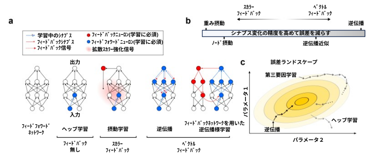
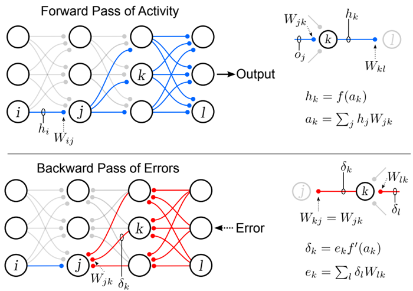
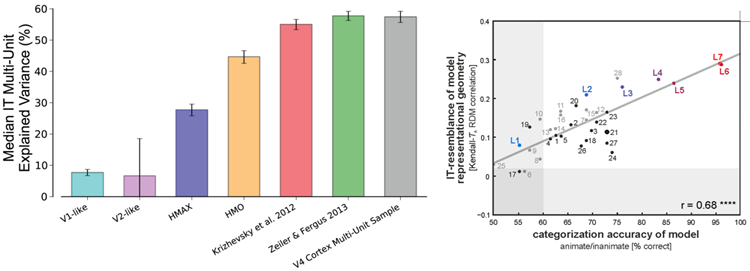
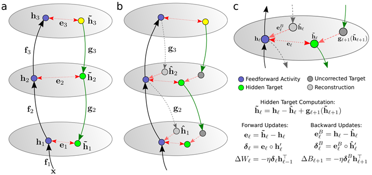
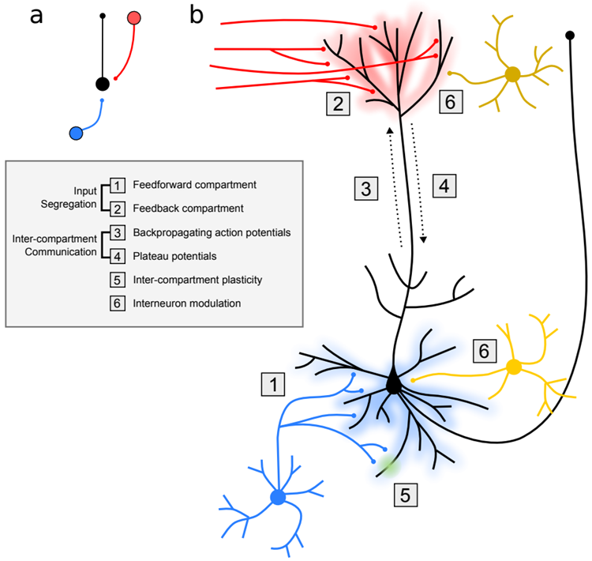
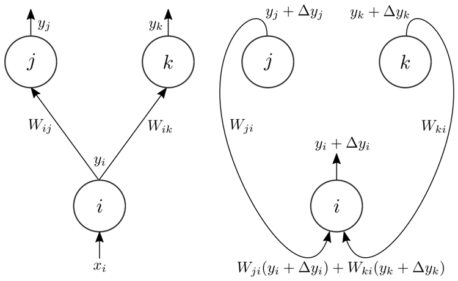

During learning the brain modifies synapses to improve behaviour. In the cortex synapses are embedded within multi-layered networks, making it difficult to determine the effect of an individual synaptic modification on the behaviour of the system. The backpropagation algo-rithm solves this problem in deep artificial neural networks, but has historically been viewed as biologically problematic. Nonetheless, recent developments in neuroscience and the successes of artificial neural networks have reinvigorated interest in whether backpropagation oers in-sights for understanding learning in the cortex. The backpropagation algorithm learns quickly by computing synaptic updates using feedback connections to deliver error signals. While feed-back connections are ubiquitous in the cortex, it is difficult to see how they could deliver the error signals required by strict formulations of backpropagation. Here we build on past and recent developments to argue that feedback connections may instead induce neural activities whose differences can be used to locally approximate these signals, and hence drive effective learning in deep networks in the brain.
学習中、脳は行動を改善するためにシナプスを変化させます。大脳皮質ではシナプスは多層ネットワークに埋め込まれているため、個々のシナプス変化がシステムの行動に及ぼす影響を判断することは困難です。バックプロパゲーションアルゴリズムは、ディープ人工ニューラルネットワークにおいてこの問題を解決しますが、これまで生物学的に問題があるとされてきました。しかしながら、神経科学の最近の発展と人工ニューラルネットワークの成功により、バックプロパゲーションが大脳皮質における学習の理解に役立つかどうかへの関心が再び高まっています。バックプロパゲーションアルゴリズムは、フィードバック接続を使用してエラー信号を伝達することでシナプス更新を計算し、迅速に学習します。フィードバック接続は大脳皮質に遍在していますが、バックプロパゲーションの厳密な定式化に必要なエラー信号をどのように伝達できるのかは理解しにくいです。本稿では、過去および最近の研究成果に基づき、フィードバック接続が神経活動を誘発し、その差異を利用してこれらの信号を局所的に近似することで、脳の深層ネットワークにおける効果的な学習を促進する可能性があると主張する。
The brain learns by modifying the synaptic connections between neurons1-5. Although synaptic physiology helps explain the rules and processes behind individual modifications, it does not explain how individual modifications coordinate to achieve a network’s goal. Since learning cannot be just a blind accumulation of myopic, synapse-specific events that do not consider downstream behavioural consequences, we need to uncover the principles orchestrating plasticity across whole networks if we are to understand learning in the brain.
脳はニューロン間のシナプス結合を変化させることで学習する1,5。シナプス生理学は個々の変化の背後にある規則やプロセスを説明するのに役立つが、個々の変化がどのように協調してネットワークの目標を達成するかは説明できない。学習は、下流の行動的結果を考慮しない近視眼的なシナプス固有のイベントの盲目的な蓄積だけではあり得ないため、脳の学習を理解するには、ネットワーク全体にわたる可塑性を統括する原理を解明する必要がある。
Within machine learning, researchers study ways of coordinating synaptic updates to improve per-formance in artificial neural networks, without being constrained by biological reality. They start by defining the architecture of the neural network, which comprises the number of neurons and how they are connected. For example, they often use deep networks with many layers of neurons since these architectures have proved to be very effective for many tasks. Next, researchers define an er-ror function6 that quantifies how poorly the network is currently achieving its goals, and then they search for learning algorithms that compute synaptic changes that reduce the error (see Figure 1).
機械学習の分野では、研究者たちは生物学的現実に制約されることなく、人工ニューラルネットワークのパフォーマンスを向上させるためにシナプス更新を調整する方法を研究しています。まず、ニューロンの数とそれらの接続方法で構成されるニューラルネットワークのアーキテクチャを定義します。たとえば、多くのタスクで非常に効果的であることが証明されているこれらのアーキテクチャは、多くのニューロン層を持つディープネットワークをよく使用します。次に、研究者たちは、ネットワークが現在どれだけ目標を達成できていないかを定量化するエラー関数6を定義し、エラーを減らすシナプス変化を計算する学習アルゴリズムを探します（図1を参照）。

Figure 1: (a) Left to right: a neural network computes an output through a series of simple computational units. To improve its outputs for a task it adjusts the synapses between these units. Simple Hebbian learning cannot make meaningful changes to the blue synapse, because it does not consider this synapse’s downstream effect on the network output. Perturbation methods measure the change in error caused by random perturbations to neural activities (node perturbation) or synapse strengths44 (weight perturbation) and use this measured change as a global scalar reinforcement signal that controls whether a proposed perturbation is accepted or rejected. The backprop algorithm instead computes the synapse update required to most quickly reduce the error. In backprop, vector error signals are delivered backwards along the original path of inuence for a neuron. In the brain, vector feedback might be delivered in a variety of ways, including via a separate network. (b) Backpropagation and perturbation algorithms fall along a spectrum with respect to the specificity of synaptic change they prescribe. (c) Algorithms on this spectrum learn at different speeds. Without feedback, synaptic parameters wander randomly on the error surface. Scalar feedback does not require detailed feedback circuits, but learns slowly. Since the same signal is used to inform learning at all synapses the difficulty of deciding whether to strengthen or weaken a synapse scales with the number of synapses in the network: If millions of synapses are changed simultaneously, the effect of one synapse change is swamped by the noise created by all the other changes and it takes millions of trials to average away this noise43-46. The inverse scaling of learning speed with network size makes global reinforcement methods extremely slow, even for moderately sized neural networks. Precise vector feedback via backprop learns quickly. In real networks, it is not possible to make perfect use of the internal structure of the network to compute per-synapse changes, but the brain may have discovered ways to approximate the speed of backprop.
図 1: (a) 左から右へ: ニューラル ネットワークは、一連の単純な計算ユニットを通して出力を計算します。タスクの出力を改善するために、これらのユニット間のシナプスを調整します。単純なヘッブ学習では、このシナプスの下流のネットワーク出力への影響を考慮しないため、青色のシナプスに意味のある変更を加えることはできません。摂動法は、ニューラル活動 (ノード摂動) またはシナプス強度 44 (重み摂動) へのランダムな摂動によって引き起こされるエラーの変化を測定し、この測定された変化を、提案された摂動を受け入れるか拒否するかを制御するグローバル スカラー強化信号として使用します。バックプロパゲーション アルゴリズムは、代わりに、エラーを最も迅速に減らすために必要なシナプス更新を計算します。バックプロパゲーションでは、ベクトルエラー信号は、ニューロンの元の影響経路に沿って逆方向に伝達されます。脳では、ベクトルフィードバックは、別のネットワークを介してなど、さまざまな方法で伝達される可能性があります。 (b) バックプロパゲーションと摂動アルゴリズムは、規定するシナプス変化の特異性に関してスペクトル上に位置する。(c) このスペクトル上のアルゴリズムは、異なる速度で学習する。フィードバックがない場合、シナプスパラメータは誤差面上でランダムに変動する。スカラーフィードバックは詳細なフィードバック回路を必要としないが、学習は遅い。すべてのシナプスでの学習に同じ信号が使用されるため、シナプスを強化するか弱めるかを決定する難易度は、ネットワーク内のシナプスの数に比例する。数百万個のシナプスが同時に変更される場合、1つのシナプスの変化の影響は、他のすべての変化によって生成されるノイズに埋もれてしまい、このノイズを平均化するには数百万回の試行が必要となる43-46。学習速度がネットワークサイズに反比例するため、中規模のニューラルネットワークであっても、グローバル強化学習法は非常に遅くなる。バックプロパゲーションによる正確なベクトルフィードバックは、学習が速い。実際のネットワークでは、ネットワークの内部構造を完全に利用してシナプスごとの変化を計算することは不可能だが、脳はバックプロパゲーションの速度を近似する方法を発見した可能性がある。
In machine learning, backpropagation of error ("backprop")7-10 is the algorithm most often used to train deep neural networks (see Box 1), and is the most successful learning procedure for deep neural networks. Networks trained with backprop are at the heart of recent successes of machine learning, including state-of-the-art speech11 and image recognition12,13, as well as language translation14. Backprop also underpins recent progress in unsupervised learning problems such as image and speech generation15,16, language modelling17, and other next-step prediction tasks18. As well, combining backprop with reinforcement learning has given rise to significant advances in solving control problems, such as mastering Atari games19, and beating top human professionals in the games of Go20,21 and Poker22.
機械学習において、誤差逆伝播法（「バックプロップ」）7-10は、深層ニューラルネットワークのトレーニングに最もよく使用されるアルゴリズムであり（ボックス1参照）、深層ニューラルネットワークの最も成功した学習手順です。バックプロップでトレーニングされたネットワークは、最先端の音声認識11や画像認識12,13、言語翻訳14など、機械学習の最近の成功の中核を成しています。バックプロップはまた、画像や音声生成15,16、言語モデリング17、その他の次のステップ予測タスク18などの教師なし学習問題における最近の進歩の基盤となっています。また、バックプロパゲーションと強化学習を組み合わせることで、アタリゲームのマスター19や囲碁20,21やポーカー22などの制御問題の解決において大きな進歩がもたらされました。

Backprop uses error signals sent through feedback connections to adjust synapses, and has classically been described in the supervised learning setting (i.e., with explicit, externally provided targets). On the other hand, the brain appears to use its feedback connections for different purposes23,24, and is thought to learn in a predominantly unsupervised fashion1,25-27, building representations that make explicit the structure that is only implicit in the raw sensory input. It is natural to wonder, then, whether backprop has anything to tell us about learning in the brain25,28-30.
バックプロパゲーションは、フィードバック接続を介して送信されるエラー信号を使用してシナプスを調整し、従来は教師あり学習の設定（つまり、明示的に外部から提供されるターゲット）で説明されてきました。一方、脳はフィードバック接続を異なる目的で使用しているようで23,24、主に教師なし学習で学習し1,25-27、生の感覚入力に暗黙的にしか含まれていない構造を明示する表現を構築していると考えられています。したがって、バックプロパゲーションが脳の学習について何かを教えてくれるのかどうか疑問に思うのは自然なことです25,28-30。
Here, we will argue that in spite of these apparent differences, the brain has the capacity to im-plement the core principles underlying backprop. The main idea is that the brain could compute effective synaptic updates by using feedback connections to induce neuron activities whose locally computed differences encode backpropagation-like error signals. We link together a seemingly dis-parate set of learning algorithms into this framework, which we call Neural Gradient Representation by Activity Dierences (NGRAD)9,27,31-41. The NGRAD framework demonstrates that it is pos-sible to embrace the core principles of backpropagation while sidestepping many of its problematic implementation requirements. These considerations may be relevant to any brain circuit that in-corporates both feedforward and feedback connectivity. We nevertheless focus on the cortex, which is defined by its multi-laminar structure and hierarchical organisation, and so has long been viewed as exhibiting many of the architectural features associated with deep networks.
ここでは、これらの明らかな違いにもかかわらず、脳はバックプロパゲーションの根底にある基本原理を実装する能力を持っていると主張します。主なアイデアは、脳がフィードバック接続を使用してニューロン活動を誘導し、その局所的に計算された差分がバックプロパゲーションのようなエラー信号を符号化することで、効果的なシナプス更新を計算できるということです。私たちは、一見異質な一連の学習アルゴリズムをこのフレームワークに統合し、これを活動差分によるニューラル勾配表現（NGRAD）9,27,31-41と呼んでいます。NGRADフレームワークは、バックプロパゲーションの基本原理を取り入れつつ、その実装上の多くの問題点を回避することが可能であることを示しています。これらの考察は、フィードフォワード接続とフィードバック接続の両方を取り入れたあらゆる脳回路に関連する可能性があります。しかしながら、我々は皮質に焦点を当てる。皮質は多層構造と階層的な組織によって特徴づけられ、そのため、深層ネットワークに関連する多くの構造的特徴を示すものとして長らく考えられてきた。
This review emphasizes the role of learning. It should be acknowledged that brains undoubtedly have prior knowledge optimized by evolution (e.g., in the form of neural architectures and default connectivity strengths). Priors may ensure that only a limited amount of learning based on a relatively small amount of task error or feedback information is needed throughout an animal’s lifetime to acquire all of the skills it exhibits. Nonetheless, though animals often display impressive behaviours right from birth, they are also capable of extraordinary feats that could not have been tuned by evolution and instead require long bouts of learning. Some examples of such feats in hu-mans are: playing Go and chess; programming a computer and designifing a video game; writing and playing a piano concerto; learning the vocabulary and grammar of multiple languages; recognizing thousands of objects; and diagnosing a medical problem and performing vascular microsurgery. Recent work in machine learning suggests that these behaviours depend on a powerful and general learning algorithm12,20. Our interest here, then, is in characterizing this learning algorithm, and specifically how it can assign credit across multiple layers of neurons.
このレビューでは学習の役割を強調する。脳は進化によって最適化された事前知識（例えば、神経構造やデフォルトの接続強度など）を持っていることは疑いない。事前知識によって、動物が示すすべてのスキルを獲得するために、比較的少量のタスクエラーやフィードバック情報に基づく限られた量の学習だけで済むことが保証される可能性がある。しかしながら、動物は生まれたときから印象的な行動を示すことが多い一方で、進化によって調整されたものではなく、長い学習を必要とする並外れた偉業も成し遂げることができる。人間におけるそのような偉業の例としては、囲碁やチェスをすること、コンピュータをプログラミングしてビデオゲームを設計すること、ピアノ協奏曲を作曲して演奏すること、複数の言語の語彙と文法を学ぶこと、何千もの物体を認識すること、医学的問題を診断して血管マイクロサージェリーを行うことなどが挙げられる。機械学習における最近の研究は、これらの行動が強力で汎用的な学習アルゴリズムに依存していることを示唆している12,20。そこで、我々の関心は、この学習アルゴリズムの特徴を明らかにすること、特にそれが複数のニューロン層にわたってどのように評価を割り当てることができるかを明らかにすることにある。
Synaptic weights determine neural activity, neural activity determines the network’s output, and the network’s output determines the network’s error. In artificial networks, we can therefore reduce the error slightly by making small changes in the synaptic weights. But it is non-trivial to decide whether to increase or decrease any particular weight because a synapse strength does not inuence the network’s output directly; rather, it inuences its immediate post-synaptic neurons, they inuence their post-synaptic neurons, and so on all the way to the output of the network. The radius of the synapse’s inuence - its projective field - rapidly expands, so the effect of changing the synapse strength depends on the strengths of many subsequent synapses in the network (e.g., the red connections originating from neuron \(j\) in Figure 1).
シナプス結合の重みは神経活動を決定し、神経活動はネットワークの出力を決定し、ネットワークの出力はネットワークのエラーを決定します。したがって、人工ネットワークでは、シナプス結合の重みをわずかに変更することでエラーをわずかに減らすことができます。しかし、シナプス結合の強度はネットワークの出力に直接影響を与えるのではなく、その直後のシナプス後ニューロンに影響を与え、それらがさらにそのシナプス後ニューロンに影響を与え、ネットワークの出力に至るまでこのプロセスが繰り返されるため、特定の重みを増やすか減らすかを決定するのは容易ではありません。シナプスの影響範囲（射影場）は急速に拡大するため、シナプス結合の強度を変更する効果は、ネットワーク内の多くの後続のシナプスの強度に依存します（例えば、図 1 のニューロン \(j\) から始まる赤い接続）。
A conceptually simple way to decide whether to strengthen or weaken a synapse is to measure the effect of changing a synapse strength on the error. Such a measurement is easy to make in artificial networks: First, some input is injected into the network and the network’s baseline error is recorded. Next, noise is added to a particular synapse, and the same input is injected back into the network. Finally, one accepts the modified (/noised) synaptic weight if the network’s new error is less than the baseline error, and rejects the modification if the new error is larger than the baseline error42-44. This can be implemented very simply by a learning rule that broadcasts a global scalar representing the overall change in performance of the network (see Figure 1a). Suppose the performance of a network is captured by an error function that computes the degree to which the
network’s outputs [\(y_1, ...,y_M\)] deviate from their target values [\(t_1, ..., t_M\)], e.g. via the squared error, \(E = \frac{1}{2}\sum_l(y_l - t_l)^2\). To improve the error we simply update a weight in the network \(W_{ij}\) via: \(\Delta W_{ij} = -\eta(E^\prime - E)\xi_{ij}\), where \(\eta\) is a learning rate, \(E\) is the error computed before noise is added, and \(E^\prime\) is the error computed after Gaussian noise \(\xi_{ij} \sim \mathcal{N}(0, \sigma)\) is added to \(W_{ij}\). Although this method works and is easy to understand, it is extremely inefficient to measure the error of the whole network in order to know how to change a single synapse.
シナプスを強化するか弱めるかを決定する概念的に単純な方法は、シナプス強度の変更がエラーに与える影響を測定することです。このような測定は人工ネットワークでは簡単に行えます。まず、ネットワークに何らかの入力を注入し、ネットワークのベースラインエラーを記録します。次に、特定のシナプスにノイズを追加し、同じ入力をネットワークに再度注入します。最後に、ネットワークの新しいエラーがベースラインエラーよりも小さい場合は、変更された（/ノイズが加えられた）シナプス重みを受け入れ、新しいエラーがベースラインエラーよりも大きい場合は、変更を拒否します42-44。これは、ネットワークのパフォーマンスの全体的な変化を表すグローバルスカラーをブロードキャストする学習ルールによって非常に簡単に実装できます（図1aを参照）。ネットワークの性能は、ネットワークの出力 [\(y_1, ...,y_M\)] が目標値 [\(t_1, ..., t_M\)] からどの程度乖離しているかを計算する誤差関数によって表されると仮定します。例えば、二乗誤差 \(E = \frac{1}{2}\sum_l(y_l - t_l)^2\) によって表されます。誤差を改善するために、ネットワークの重み \(W_{ij}\) を次のように更新します。\(\Delta W_{ij} = -\eta(E^\prime - E)\xi_{ij}\)。ここで、\(\eta\) は学習率、\(E\) はノイズを加える前に計算された誤差、\(E^\prime\) はガウスノイズ \(\xi_{ij} \sim \mathcal{N}(0, \sigma)\) を \(W_{ij}\) に加えた後に計算された誤差です。この方法は機能し、理解しやすいものの、単一のシナプスを変更する方法を知るためにネットワーク全体の誤差を測定するのは非常に非効率的です。
If changes at some synapses have more effect on performance than changes at other synapses, we can do a bit better by measuring the effects of making N different synaptic changes simultaneously (in parallel), but this does not really solve the efficiency issue because we then require about N trials before we can reliably infer whether increasing any particular synapse strength will increase or decrease the error44-46. These kinds of ‘weight perturbation’ methods can be further improved by perturbing the outputs of neurons instead of weights42,47. Such ‘node perturbation’ methods compute local derivatives of a neuron’s activity with respect to its own weights to speed up learning, but these methods are still very slow, and the performance gap increases as network size increases44. We think it likely that the brain employs perturbation methods for some kinds of learning. However, it is striking that there has not yet been any successful application of these methods to training large, deep networks for difficult problems, such as classifying natural images of many different types of object.
一部のシナプスの変化が他のシナプスの変化よりもパフォーマンスに大きな影響を与える場合、N 個の異なるシナプス変化を同時に (並列に) 測定することで、少しは改善できますが、特定のシナプス強度の増加がエラーの増加または減少につながるかどうかを確実に推測できるようになるまでに約 N 回の試行が必要になるため、効率の問題は実際には解決されません 44-46。このような「重み摂動」法は、重みではなくニューロンの出力を摂動することでさらに改善できます 42,47。このような「ノード摂動」法は、ニューロンの活動の重みに関する局所微分を計算して学習を高速化しますが、これらの方法は依然として非常に遅く、ネットワークサイズが大きくなるにつれてパフォーマンスのギャップが大きくなります 44。脳は、ある種の学習に摂動法を採用している可能性が高いと考えています。しかしながら、これらの手法を、多様な種類の物体の自然画像を分類するといった困難な問題に対して、大規模で深層的なネットワークを訓練するために応用することに成功した例がまだないというのは、驚くべきことである。
The backprop algorithm addresses the efficiency issues present in perturbation methods by com-puting rather than measuring how a change in a synapse strength aects the network’s error (see Box 1). This computation is possible because we have access to the exact causal relationship be-tween the synapse strengths and the network’s output. By contrast, the causal relationship between the genotype and the phenotype generally depends upon unknown aspects of the environment, so measuring the effects of genetic changes may be the only reasonable algorithm for evolution.
バックプロパゲーションアルゴリズムは、シナプス強度の変化がネットワークのエラーにどのように影響するかを測定するのではなく計算することで、摂動法に存在する効率性の問題を解決します（ボックス1を参照）。この計算は、シナプス強度とネットワークの出力との間の正確な因果関係にアクセスできるため可能です。対照的に、遺伝子型と表現型の間の因果関係は一般的に環境の未知の側面に依存するため、遺伝子変化の影響を測定することが進化を研究するための唯一合理的なアルゴリズムとなる可能性があります。
Backprop computes how slightly changing each synapse strength would change the network’s error using the chain rule of calculus. Moreover, it does this computation for all the synapse strengths at the same time and it only requires the same amount of computation as is needed for a forward propagation pass through the network. Its key insight is to implement the chain rule of calculus using a recursive computation of "error signals" (see Box 1 for backprop’s algorithmic details). In a hierarchical, multi-layer neural network, the error signals for the neurons in one layer are computed from the error signals in the layer above. Thus, error computations start in the final layer and ow backwards, leading to the notion of errors \backpropagating" through the network. Once error signals have been computed for every neuron, the final output error can be reduced by changing the incoming weights of each neuron so as to push its post-synaptic activity in the direction specified by the error signal.
バックプロパゲーションは、微積分学の連鎖律を用いて、各シナプス強度をわずかに変更した場合にネットワークのエラーがどのように変化するかを計算します。さらに、この計算はすべてのシナプス強度に対して同時に行われ、ネットワークを順方向に伝播するのに必要な計算量と同じ量しか必要としません。その重要な着想は、「エラー信号」の再帰的な計算を用いて微積分学の連鎖律を実装することです（バックプロパゲーションのアルゴリズムの詳細については、ボックス1を参照）。階層的な多層ニューラルネットワークでは、ある層のニューロンのエラー信号は、その上の層のエラー信号から計算されます。したがって、エラー計算は最終層から始まり、逆方向に流れるため、ネットワークを通してエラーが「逆伝播」するという概念につながります。すべてのニューロンのエラー信号が計算されると、各ニューロンの入力重みを変更して、そのシナプス後活動をエラー信号によって指定された方向に押し出すことで、最終出力エラーを減らすことができます。
Backprop is often presented as requiring explicit output targets that are paired with corresponding input patterns. In fact, backprop’s recursive application of the chain rule provides a more general mechanism for computing how changes in the activity of one part of a network effect activities down-stream. This mechanism is thus broadly applicable to credit assignment in multi-layer networks. For simplicity, we follow the supervised learning paradigm, but note that backpropagated signals do not need to be a difference from a supervised target. They can also be a temporal difference error or a policy gradient in reinforcement learning19,46,48-50, or a reconstruction or prediction error for an unsupervised algorithm (see Section in the Supplementary Information). All of these can be self constructed by an organism without reference to an external target.
バックプロパゲーションは、対応する入力パターンとペアになった明示的な出力ターゲットを必要とするものとして提示されることが多い。実際には、バックプロパゲーションの連鎖律の再帰的適用は、ネットワークの一部の活動の変化が下流の活動にどのように影響するかを計算するためのより一般的なメカニズムを提供する。したがって、このメカニズムは、多層ネットワークにおけるクレジット割り当てに広く適用できる。簡潔にするために、教師あり学習パラダイムに従うが、バックプロパゲーション信号は教師ありターゲットとの差分である必要はないことに注意する。それらは、強化学習19,46,48-50における時間差誤差またはポリシー勾配、あるいは教師なしアルゴリズムの再構成誤差または予測誤差であることもできる（補足情報のセクションを参照）。これらはすべて、外部ターゲットを参照することなく、生物によって自己構築することができる。
An important empirical feature of backprop|and perhaps a key reason for its success|is its ability to quickly find good internal representations of inputs51 when training deep neural networks. Internal representations are not specified explicitly by the input or the output targets. Instead they must be discovered over the course of learning. Internal representations comprise useful building blocks - such as representations for edges, fragments of shapes, or semantic features of words, etc. - that the network’s intermediate layers use to efficiently code many different entities by using combinations of shared features. The distributed representation of input data as an activity vector of reusable, mix-and-match features allows networks to represent novel data as new combinations of familiar features, and this allows the network to generalize to new data from the same distribution as the training data, and in some cases to data that is outside this distribution.
バックプロパゲーションの重要な経験的特徴、そしておそらくその成功の鍵となる理由は、ディープニューラルネットワークをトレーニングする際に、入力の優れた内部表現を迅速に見つけることができる点です51。内部表現は、入力または出力ターゲットによって明示的に指定されるものではありません。代わりに、学習の過程で発見される必要があります。内部表現は、エッジ、形状の断片、単語の意味的特徴などの有用な構成要素で構成されており、ネットワークの中間層は、共有特徴の組み合わせを使用して、さまざまなエンティティを効率的にコード化するためにこれらを使用します。再利用可能な組み合わせ可能な特徴のアクティビティベクトルとして入力データを分散表現することで、ネットワークは新しいデータを馴染みのある特徴の新しい組み合わせとして表現することができ、これにより、ネットワークはトレーニングデータと同じ分布の新しいデータ、場合によってはこの分布外のデータにも一般化することができます。
The backprop algorithm has two main features that are critical for its operation. These features are remarkably consistent with biological networks. First is the prescription of synapse-specific changes. Synaptic plasticity mechanisms are widely accepted to exhibit synapse-specificity in biological net-works undergoing learning5,52, such as in STDP2-4, where the specific pre- and post-synaptic spike trains inuence the particular synaptic modifications between two neurons. Second is the require-ment for feedback connections to deliver error information to neurons deep within the network so that they can compute the necessary synaptic changes. We will refer to a learning algorithm as ‘backprop-like’ if it optimizes a downstream objective by using detailed vector feedback to help prescribe synapse specific updates. Feedback connections between areas permeate every network of the cortex and, critically, can act to modulate the spiking of "feedforward" neurons. These feedback connections can take the form of direct ‘top-down’ corticocortical connections from higher processing cortical areas to lower processing areas, like those that exist between V2 and V1 within the visual system23. Equally, feedback connections could be routed through thalamus, via cortico-thalamo-cortical loops that can deliver higher order information to cortical regions and individual neurons that receive lower order information53-55.
バックプロパゲーションアルゴリズムには、その動作に不可欠な2つの主要な特徴があります。これらの特徴は、生物学的ネットワークと驚くほど一致しています。1つ目は、シナプス特異的な変化の処方です。シナプス可塑性メカニズムは、学習中の生物学的ネットワークにおいてシナプス特異性を示すことが広く認められています5,52。例えば、STDP2-4では、特定のシナプス前およびシナプス後スパイク列が、2つのニューロン間の特定のシナプス修飾に影響を与えます。2つ目は、フィードバック接続がネットワークの奥深くのニューロンにエラー情報を伝え、必要なシナプス変化を計算できるようにすることです。詳細なベクトルフィードバックを使用してシナプス特異的な更新を処方することで下流の目的を最適化する学習アルゴリズムを「バックプロパゲーション型」と呼びます。領域間のフィードバック接続は、皮質のすべてのネットワークに浸透しており、重要なことに、「フィードフォワード」ニューロンの発火を調節する働きをします。これらのフィードバック接続は、視覚系内のV2とV1の間に存在するような、高次処理皮質領域から低次処理領域への直接的な「トップダウン」皮質間接続の形をとることがあります23。同様に、フィードバック接続は視床を経由して、より高次の情報を、より低次の情報を受け取る皮質領域や個々のニューロンに伝達できる皮質-視床-皮質ループを介してルーティングされることもあります53-55。
It is not clear in detail what role feedback connections play, so we cannot say that cortex employs backprop-like learning. Yet, if feedback connections modulate spiking, and spiking determines the adaptation of synapse strengths, the information carried by the feedback connections must clearly inuence learning! Backpropagation can be viewed as a very good candidate for what this inuence should be if the cortex is to be an efficient learning machine. This still leaves open the details of exactly how the feedback connections could approximate backpropagation and there are good arguments to suggest that some of the most obvious implementations are biologically unrealistic (discussed below)25,28-30,56,57. But these arguments do not mean that backprop should be abandoned as a guide to understanding learning in the brain57-59; its core ideas - that neural networks can learn by computing synapse-specific changes using information delivered in an intricate web of feedback connections - have now proven to be so powerful in so many different applications that we need to investigate less obvious implementations.
フィードバック接続がどのような役割を果たすかは詳細には明らかではないため、皮質がバックプロパゲーションのような学習を採用しているとは言えません。しかし、フィードバック接続がスパイクを調節し、スパイクがシナプス強度の適応を決定するのであれば、フィードバック接続によって伝達される情報は明らかに学習に影響を与えなければなりません。皮質が効率的な学習マシンであるならば、バックプロパゲーションはこの影響の非常に良い候補と見なすことができます。フィードバック接続がバックプロパゲーションをどのように近似できるかという詳細は依然として未解決であり、最も明白な実装のいくつかは生物学的に非現実的であると示唆する有力な議論があります（後述）25,28-30,56,57。しかし、これらの議論は、脳における学習を理解するための指針としてバックプロパゲーションを放棄すべきであることを意味するものではありません57-59。その中核となる考え方、すなわちニューラルネットワークは複雑なフィードバック接続の網を通して伝達される情報を用いてシナプス固有の変化を計算することで学習できるという考え方は、非常に多くの異なる応用分野で非常に強力であることが証明されたため、より目立たない実装方法を調査する必要がある。
It should be noted at the outset that the cortex differs from artificial neural networks in many significant ways. For example: (1) There is no straightforward mapping between layers in an artificial network and layers (i.e. Layers 1-6) or areas (e.g. V1 and V2) in the cortex, (2) Cell types, connectivity, and gene expression differ between different areas of the cortex60-63, (3) Cortical areas send and receive different kinds of connections to and from a variety of cortical and sub-cortical areas, etc. Nevertheless, there are also overarching similarities across cortical areas, such as the prevalence of microcolumns64,65 and canonical connectivity patterns both within and between cortical areas54,66, which suggest common computations67, and we believe that understanding these common computations will be useful. Specically, we imagine that an algorithm akin to backprop is required to coordinate synaptic changes.
まず最初に、大脳皮質は人工神経ネットワークとは多くの重要な点で異なっていることに留意すべきである。例えば、(1) 人工ネットワークの層と大脳皮質の層 (すなわち、第 1 層から 第 6 層) または領域 (例えば、V1 と V2) の間には単純な対応関係はない、(2) 細胞の種類、接続性、および遺伝子発現は、大脳皮質の異なる領域間で異なっている60-63、(3) 大脳皮質領域は、さまざまな大脳皮質領域および皮質下領域との間で、異なる種類の接続を送受信している、などである。しかしながら、大脳皮質領域全体には、マイクロカラムの普及64,65や、大脳皮質領域内および領域間の標準的な接続パターン54,66など、共通の計算を示唆する包括的な類似点も存在し67、これらの共通の計算を理解することは有用であると考えられる。具体的には、シナプス変化を調整するには、バックプロパゲーションに似たアルゴリズムが必要だと考えている。
There is no direct evidence that the brain uses a backprop-like algorithm for learning. Past work has, however, shown that backprop-trained models can account for observed neural responses, such as the response properties of neurons in posterior parietal cortex68 and primary motor cortex69. A new wave of evidence from neuroscience modelling of the visual cortex carries this trend forward58,70-72. This work reveals that multi-layer models trained with backprop to classify objects tend to have representations that better match those along the visual ventral stream in primates (Figure 2). Models that are not trained with backprop (such as bio-inspired models using Gabor filters73,74, or networks that used non-backprop optimization59) do not perform as well as backprop-optimized networks, and their representations do not match those found in IT cortex as well as those discovered by backprop trained models. Representational matches of networks trained by backprop are by no means perfect, and recent work indicates that current models do not explain aspects of human object classification75. Nevertheless, the general phenomena appears to be widespread, with related work demonstrating that auditory neuron responses are also better predicted by multi-layer networks trained by backprop76. This does not prove that the cortex learns via backprop-like mechanisms, but as the authors of Cadieu et al. [58] state, it shows that "[the] possibility cannot be ruled out merely on representational grounds."
脳が学習にバックプロパゲーションのようなアルゴリズムを使用しているという直接的な証拠はありません。しかし、過去の研究では、バックプロパゲーションで訓練されたモデルが、後頭頂皮質68や一次運動皮質69のニューロンの応答特性など、観察された神経応答を説明できることが示されています。視覚皮質の神経科学モデリングからの新たな証拠の波は、この傾向をさらに推し進めています58,70-72。この研究は、物体を分類するためにバックプロパゲーションで訓練された多層モデルは、霊長類の視覚腹側経路に沿った表現とよりよく一致する傾向があることを明らかにしています（図2）。バックプロパゲーションで訓練されていないモデル（ガボールフィルタを使用したバイオインスパイアードモデル73,74や、バックプロパゲーション最適化を使用しないネットワーク59など）は、バックプロパゲーションで最適化されたネットワークほど優れた性能を発揮せず、その表現は、バックプロパゲーションで訓練されたモデルによって発見されたものほど、IT皮質で見られるものとは一致しません。バックプロパゲーションによって訓練されたネットワークの表現上の一致は決して完璧ではなく、最近の研究では、現在のモデルでは人間の物体分類の側面を説明できないことが示されています75。それにもかかわらず、この一般的な現象は広く見られるようで、関連する研究では、聴覚ニューロンの応答もバックプロパゲーションによって訓練された多層ネットワークによってよりよく予測されることが示されています76。これは、皮質がバックプロパゲーションのようなメカニズムを介して学習することを証明するものではありませんが、Cadieuら[58]の著者らが述べているように、「表現上の根拠のみに基づいて可能性を排除することはできない」ことを示しています。

Figure 2: Comparison of backprop trained networks with neural responses in visual ventral cortex. (Left) Cadieu et al. [58] showed that backprop trained models12,81 (red and green) explain IT multi-unit responses better than other models. (Right) Khaligh-Razavi & Kriegeskorte [70] showed that models with better classification performance more closely resemble IT representations; each numbered dot corresponds to a model, whilst the colored dots L1-L7 correspond to successively deeper network layers. Moreover, neurons in deeper layers within the backprop trained network, match IT better than neurons in earlier layers.
図2：バックプロップ学習済みネットワークと視覚腹側皮質の神経応答の比較。（左）Cadieuら[58]は、バックプロップ学習済みモデル12,81（赤と緑）が他のモデルよりもIT多単位応答をよりよく説明できることを示した。（右）Khaligh-RazaviとKriegeskorte[70]は、分類性能が優れたモデルがIT表現により近いことを示した。番号付きの各ドットはモデルに対応し、色付きのドットL1-L7は順次深いネットワーク層に対応する。さらに、バックプロップ学習済みネットワーク内のより深い層のニューロンは、より前の層のニューロンよりもITによく一致する。
Performance and representational matches can never on their own establish that backprop-like mechanisms are employed by the brain. The proliferation of computing power and the discovery of better priors may one day allow researchers to train high-performing networks for complex tasks using slower learning algorithms that do not make use of vector feedback. What we can say is that the practicality and efficiency of backprop are at least suggestive that the brain ought to harness detailed, error-driven feedback for learning; to our knowledge, no one in the machine learning community has been able to train high-performing deep networks on difficult tasks such as ImageNet using any algorithm besides backprop. In particular, attempts to rely on algorithms that use only scalar feedback signals, such as genetic algorithms77 or REINFORCE46, have failed by a wide margin to reach backprop’s level of performance.
パフォーマンスと表現の一致だけでは、脳がバックプロパゲーションのようなメカニズムを採用していることを証明することはできない。計算能力の向上とより優れた事前分布の発見により、研究者はいつの日か、ベクトルフィードバックを使用しないより低速な学習アルゴリズムを使用して、複雑なタスク向けに高性能なネットワークをトレーニングできるようになるかもしれない。私たちが言えることは、バックプロパゲーションの実用性と効率性は、脳が学習のために詳細なエラー駆動型フィードバックを活用すべきであることを少なくとも示唆しているということである。私たちの知る限り、機械学習コミュニティで、バックプロパゲーション以外のアルゴリズムを使用してImageNetのような困難なタスクで高性能な深層ネットワークをトレーニングできた人はいない。特に、遺伝的アルゴリズム77やREINFORCE46など、スカラーフィードバック信号のみを使用するアルゴリズムに頼ろうとする試みは、バックプロパゲーションのパフォーマンスレベルに到達するには程遠い結果となっている。
In addition to producing models that better match representations observed in the brain, backprop trained deep networks can also help explain the size and timing of receptive field changes in percep-tual learning72,78, as well as stage-like transitions observed during some biological learning78. Other work has demonstrated that neurons in layers 2/3 of cortex appear to compute detailed mismatches between actual and predicted sensory events79, and that neural dynamics at successive stages of the visual cortex are consistent with hierarchical error signals80. These findings are consistent with the hypothesis that feedback connections in the cortex drive learning across multiple layers of rep-resentation. In the penultimate section we review recently described neural mechanisms that oer additional support for this hypothesis.
バックプロパゲーションで訓練された深層ネットワークは、脳内で観察される表現によりよく一致するモデルを生成するだけでなく、知覚学習における受容野の変化の大きさやタイミング72,78、および一部の生物学的学習中に観察される段階的な遷移78を説明するのにも役立ちます。他の研究では、皮質の層2/3のニューロンが実際の感覚イベントと予測された感覚イベントの間の詳細な不一致を計算しているように見えること79、および視覚皮質の連続する段階における神経ダイナミクスが階層的なエラー信号と一致していること80が実証されています。これらの発見は、皮質内のフィードバック接続が複数の表現層にわたる学習を促進するという仮説と一致しています。最後から2番目のセクションでは、この仮説をさらに裏付ける最近記述された神経メカニズムを概説します。
While there is mounting evidence that multi-layer networks trained with backprop can help explain neural data, there are difficult questions about how backprop-like learning could be implemented in cortex. Equation 1 gives the synaptic updates prescribed by backprop in matrix/vector notation:
バックプロパゲーションで訓練された多層ネットワークが神経データの説明に役立つという証拠は増えつつあるが、バックプロパゲーションのような学習を皮質でどのように実装できるかについては難しい問題が残っている。式1は、バックプロパゲーションによって規定されるシナプス更新を行列/ベクトル表記で示している。
\[
\Delta W_l = -\eta\frac{\partial E}{\partial W} = -\eta\boldsymbol{\delta}_l\mathbf{h}_{l-1}^\top \quad \text{ここで} \quad \boldsymbol{\delta}_l = \mathbf{e}_l \circ \mathbf{f}^\prime(\mathbf{a}_l) = (W_{l+1}^\top\boldsymbol{\delta}_{l+1})\circ\mathbf{f}^\prime(\mathbf{a}_l) \tag{1}
\]
Where bold symbols are vectors, \(\cdot^\top\), is the transpose operation, and \(\circ\) is element-wise multiplication, and \(\mathbf{h}_l = \mathbf{f}(\mathbf{a}_l)\). Since this equation does not require indices for individual neurons (as in Box 1), we use subscripts to denote the layers. The equation says that the presynaptic weights, \(W_l\), in layer \(l\) are updated according to the product of the error signals \(boldsymbo{\delta}_l\) and the presynaptic activities which are the outputs of the previous layer \(\mathbf{h}_{l-1}\). The error signals \(\boldsymbol{\delta}_l\) are computed by multiplying the error signals from the layer above, \(\boldsymbol{\delta}_{l+1}\), by the transpose of the post-synaptic weights \(W_{l+1}^\top\) and then multiplying by the derivative of the activity function \(\mathbf{f}^\prime(\mathbf{a}_l)\). It’s perhaps worth noting that, when presented in the following form: \(\Delta W_l = -\eta(\mathbf{e}_l\circ\mathbf{f}^\prime(\mathbf{a}_l))\mathbf{h}_{l-1}^\top\), the update can be seen as a local Hebbian-like rule | where the post-synaptic activity is replaced by \(\mathbf{f}^\prime(\mathbf{a}_l)\) - that is modulated by a third factor82, \(\mathbf{e}_l\), which is computed via feedback connections. In the subsequent sections, we will refer to Equation 1 when outlining three major difficulties in implementing backprop in biological circuits.
ここで、太字の記号はベクトル、\(\cdot^\top\) は転置演算、 \(\circ\) は要素ごとの乗算、 \(\mathbf{h}_l = \mathbf{f}(\mathbf{a}_l)\) です。この式は個々のニューロンのインデックスを必要としないため (ボックス 1 のように)、添え字を使用して層を表します。この式は、層 \(l\) のシナプス前重み \(W_l\) が、誤差信号 \(\boldsymbol{\delta}_l\) と前の層 \(\mathbf{h}_{l-1}\) の出力であるシナプス前活動の積に従って更新されることを示しています。エラー信号 \(\boldsymbol{\delta}_l\) は、上位層のエラー信号 \(\boldsymbol{\delta}_{l+1}\) にシナプス後重み \(W_{l+1}^\top\) の転置を乗じ、さらに活動関数 \(\mathbf{f}^\prime(\mathbf{a}_l)\) の導関数を乗じることによって計算されます。次の形式で表すと、\(\Delta W_l = -\eta(\mathbf{e}_l\circ\mathbf{f}^\prime(\mathbf{a}_l))\mathbf{h}_{l-1}^\top\) 更新は局所的なヘッブ型ルールとして見ることができることに注意する価値があるかもしれません。ここで、シナプス後活動は、フィードバック接続を介して計算される第 3 の因子 \(\mathbf{e}_l\) によって変調される \(\mathbf{f}^\prime(\mathbf{a}_l)\) に置き換えられます。以降のセクションでは、生物学的回路でバックプロパゲーションを実装する際の 3 つの主な困難を概説する際に、式 1 を参照します。
A naive implementation of backprop requires the delivery of error signals through feedback connec-tions that have exactly the same strength as the feedforward connections. In equation 1, errors, \(\boldsymbol{\delta}_{l+1}\), travel along feedback weights, \(W_{l+1}^\top\), that are symmetric to their feedforward counterparts. On a computer, the backprop algorithm sends error information backward using a set of error derivative variables that are distinct from the activity variables used in the forward pass. Soon after backprop was introduced83,84, it was suggested that, in the brain, error information could be delivered by a distinct \error delivery network", with each neuron in this backward network carrying update information for a matched neuron in the \forward" network. Early work on how backprop might be implemented in the brain also explored the idea that error signals might travel retrogradely along the feedforward axons85,86 (with, somehow, equivalent strength as in the antero-grade direction). But this idea has been abandoned because retrograde communication is much too slow to support backprop87-89. The need to have the same weight on two different connections has been called the \weight transport" problem25,28,83 and would still be a major hurdle with a second error delivery network. Previous work has considered the use of symmetric learning rules to establish and maintain this weight symmetry28,34,39,83,90-92, but the cortex does not exhibit the requisite point-to-point reciprocal connectivity.
バックプロパゲーションの単純な実装では、フィードフォワード接続とまったく同じ強度のフィードバック接続を介してエラー信号が伝達される必要があります。式 1 では、エラー \(\boldsymbol{\delta}_{l+1}\) は、フィードフォワードの対応物と対称なフィードバック重み \(W_{l+1}^\top\) に沿って伝わります。コンピュータでは、バックプロパゲーションアルゴリズムは、フォワードパスで使用される活動変数とは異なる一連のエラー微分変数を使用して、エラー情報を逆方向に送信します。バックプロパゲーションが導入されて間もなく83,84、脳では、エラー情報は、この逆方向ネットワークの各ニューロンがフォワードネットワークの対応するニューロンの更新情報を運ぶ、別の「エラー配信ネットワーク」によって伝達される可能性があることが示唆されました。脳内でバックプロパゲーションがどのように実装されるかについての初期の研究では、エラー信号がフィードフォワード軸索に沿って逆行性に伝わる（何らかの方法で順行方向と同等の強度で）という考えも検討されました85,86。しかし、逆行性通信はバックプロパゲーションをサポートするには遅すぎるため、この考えは放棄されました87-89。2つの異なる接続で同じ重みを持つ必要性は「重み輸送」問題と呼ばれ25,28,83、2番目のエラー伝達ネットワークでも依然として大きな障害となります。これまでの研究では、この重みの対称性を確立および維持するために対称的な学習ルールを使用することが検討されました28,34,39,83,90-92が、皮質は必要なポイントツーポイントの相互接続を示しません。
Fortunately, recent work demonstrates that this symmetry is unnecessary57,93-100. Remarkably, net-works with fixed random feedback weights learn to approximately align their feedforward synaptic weights to their feedback weights. In a display of neural pragmatism, the fake error derivatives com-puted using the random feedback weights cause updates to the feedforward weights that make the true error derivatives closer to the fake derivatives. This surprising phenomenon, called \feedback alignment", suggests that feedback connections do not need to be symmetric to their feedforward counterparts in order to deliver information that can be used for fast and effective weight updates57. Feedback alignment thus oered early evidence that the kind of precise symmetry employed by back-prop is not always required for effective learning. Random feedback weights may be insuficient for learning in deeper networks101, but subsequent work has demonstrated that simple learning mech-anisms could shape the backward pathway to ensure that effective feedback is delivered100,102, even in very deep networks trained on a complex task102.
幸いなことに、最近の研究ではこの対称性は不要であることが示されています57,93-100。驚くべきことに、ランダムなフィードバック重みが固定されたネットワークは、フィードフォワードシナプス重みをフィードバック重みにほぼ合わせるように学習します。ニューラル実用主義の表れとして、ランダムなフィードバック重みを使用して計算された偽のエラー微分は、フィードフォワード重みを更新し、真のエラー微分を偽の微分に近づけます。 「フィードバックアライメント」と呼ばれるこの驚くべき現象は、フィードバック接続が、高速かつ効果的な重み更新に使用できる情報を提供するために、フィードフォワード接続と対称である必要がないことを示唆しています57。したがって、フィードバックアライメントは、バックプロパゲーションで使用されるような正確な対称性が、効果的な学習に必ずしも必要ではないという初期の証拠を提供しました。ランダムなフィードバック重みは、より深いネットワークでの学習には不十分かもしれませんが101、その後の研究では、単純な学習メカニズムが、複雑なタスクでトレーニングされた非常に深いネットワークでも、効果的なフィードバックが確実に提供されるように、逆方向の経路を形成できることが実証されています100,102。
In backprop the information sent backwards through a network to inform updates is conveyed in the form of signed error signals, \(\boldsymbol{\delta}\). During training these signals often vary across many orders of magnitudes, a phenomena referred to as exploding and vanishing gradients103. While there exists evidence for signed error delivery in apparently single-layered structures such as the cere-bellum104,105, feedback of signed error in deep networks, such as the cortex, appears problematic. A separate set of \error neurons"83,84,102, as suggested in the previous section, could be used to implement a backward pass with firing rates above a certain value communicating positive error and below this value negative error. However, they must then perform complicated bookkeeping to coherently integrate signed information coming from multiple feedback connections, and to continue the propagation of this information across multiple layers. When thinking about backprop in the brain this problem is still unsolved, but we will explore a potential solution that avoids propagation of error signals altogether.
バックプロパゲーションでは、更新を知らせるためにネットワークを介して逆方向に送られる情報は、符号付き誤差信号 \(\boldsymbol{\delta}\) の形で伝達されます。トレーニング中、これらの信号はしばしば何桁もの大きさで変化し、これは勾配の爆発と消失と呼ばれる現象です103。小脳104,105のような一見単層構造で符号付き誤差が伝達される証拠はありますが、大脳皮質のような深層ネットワークでの符号付き誤差のフィードバックは問題があるようです。前節で提案したように、別のエラーニューロンのセット83,84,102を使用して、ある値を超えるリングレートで正のエラーを、その値以下の値で負のエラーを伝える逆伝播を実装することができます。ただし、複数のフィードバック接続から来る符号付き情報を整合的に統合し、この情報を複数の層にわたって伝播し続けるために、複雑な帳簿管理を実行する必要があります。脳におけるバックプロパゲーションを考えると、この問題はまだ解決されていませんが、エラー信号の伝播を完全に回避する潜在的な解決策を探ります。
In error backpropagation, feedback connections deliver error signals that do not inuence the ac-tivity states of neurons produced by feedforward propagation. Rather, the information delivered via \(\boldsymbol{\delta}\) only inuences synaptic updates. The role of feedback connections in the brain appears to be fundamentally different. In the cortex for example, these connections inuence the neural activities produced by feedforward propagation, and are thought to serve a number of functional roles. For example, top-down control through feedback connections has a well-established link with gain con-trol - i.e., the enhancement or suppression of neural responses depending on, for example, attention to a particular feature in the visual fileld65,106-118. Interestingly, feedback connections in cortex can also drive activity, rather than just modulate, or enable it.
エラー逆伝播では、フィードバック接続は、フィードフォワード伝播によって生成されるニューロンの活動状態に影響を与えないエラー信号を伝達します。むしろ、\(\boldsymbol{\delta}\) を介して伝達される情報は、シナプス更新にのみ影響を与えます。脳におけるフィードバック接続の役割は、根本的に異なるようです。たとえば、皮質では、これらの接続はフィードフォワード伝播によって生成される神経活動に影響を与え、多くの機能的役割を果たしていると考えられています。たとえば、フィードバック接続によるトップダウン制御は、ゲイン制御、つまり、たとえば視覚野の特定の特徴への注意に応じて神経応答を増強または抑制することと、よく知られた関連性があります65,106-118。興味深いことに、皮質のフィードバック接続は、活動を単に調整したり可能にするだけでなく、活動を駆動することもできます。
This idea is corroborated by experiments showing that conduction velocities and types of excita-tory synaptic communication are often comparable between feedback and feedforward axons119,120, evidence that early visual areas are activated during visual mental imagery121,122, evidence that top-down feedback is actively involved in bottom-up processing123,124, and by lesion experiments demon-strating cessation of activity following inactivation of feedback125,126. Consequences of this idea appear in a number of proposals, such as Reverse Hierarchy Theory127, and hierarchical Bayesian inference (HBI) for perception36,128-131, both of which draw inspiration from Helmholtz’s view of perception as unconscious inference132.
この考えは、フィードバック軸索とフィードフォワード軸索の間で伝導速度と興奮性シナプス伝達の種類がしばしば同程度であることを示す実験119,120、視覚的メンタルイメージ中に初期視覚野が活性化されるという証拠121,122、トップダウンフィードバックがボトムアップ処理に積極的に関与しているという証拠123,124、およびフィードバックの不活性化後に活動が停止することを示す病変実験125,126によって裏付けられています。この考え方の結果は、逆階層理論127や知覚のための階層的ベイズ推論（HBI）36,128-131など、多くの提案に現れており、どちらもヘルムホルツの知覚を無意識の推論と捉える見方132から着想を得ている。
Although neuroscientists have proposed several different functions for feedback connections, they have rarely considered the possibility that their primary function is to drive learning, see e.g.,23. There is, however, a long but lesser known history of work in the machine learning literature that uses feedback connections to alter the activities produced during feedforward propagation (unlike backprop), and then uses these alterations to guide learning9,27,31-35,37-41. Here, we suggest that the most important role for feedback connections is to make alterations in neural activities to convey the information required for effective multi-layer learning; that is, the activity alterations induced by feedback dictate synaptic weight changes that improve feedforward processing in deep networks.
神経科学者はフィードバック接続のさまざまな機能を提案してきましたが、その主な機能が学習を促進することである可能性についてはほとんど検討してきませんでした（例えば、23を参照）。しかし、機械学習の文献には、フィードバック接続を使用してフィードフォワード伝播中に生成される活動を変更し（バックプロパゲーションとは異なり）、これらの変更を使用して学習を誘導するという、長くあまり知られていない研究の歴史があります9,27,31-35,37-41。ここでは、フィードバック接続の最も重要な役割は、効果的な多層学習に必要な情報を伝達するために神経活動を変更することであると提案します。つまり、フィードバックによって誘発される活動の変化は、深層ネットワークのフィードフォワード処理を改善するシナプス重みの変化を決定します。
There have been many proposed learning mechanisms that use differences in activity states to drive synaptic changes, rather than propagating or diusing signals that directly represent gradients ex-plicitly. Around the time that backprop entered the mainstream8, several neural network learning algorithms - including the Boltzmann machine35,133 - explored this idea by using temporal differ-ences between activities inferred during two phases of propagation to compute updates. Several recently introduced approaches instead use activity differences between sets of neurons in a local circuit134, or between different compartments within a neuron135,136.
活動状態の違いを利用してシナプス変化を駆動する学習メカニズムが数多く提案されており、勾配を明示的に直接表す信号を伝播または拡散するのではなく、活動状態の違いを利用してシナプス変化を駆動する。バックプロパゲーションが主流になった頃8、ボルツマンマシン35,133を含むいくつかのニューラルネットワーク学習アルゴリズムは、伝播の2つのフェーズで推測された活動間の時間的差異を利用して更新を計算することで、このアイデアを探求した。最近導入されたいくつかのアプローチは、代わりに局所回路内のニューロンのセット間の活動差異134、またはニューロン内の異なるコンパートメント間の活動差異135,136を利用する。
We call learning mechanisms that use differences in activity states to drive synaptic changes NGRADs, which stands for Neural Gradient Representation by Activity Differences. The idea that the cortex uses an NGRAD to perform an approximation to gradient descent will be called the NGRAD hypothesis. The main attraction of this hypothesis is that it avoids the need to prop-agate two quite different types of quantifity: activities and error derivatives. Instead, NGRADs are based on the idea that higher level activities - coming from a target, another modality, or a larger spatial- or temporal-context - can nudge27,34,135 lower level activities towards values that are more consistent with higher-level activity or a desired output. Moreover, the induced change in lower level activities can then be used to compute backprop-like weight updates using only locally avail-able signals. Thus, the fundamental idea is that top-down driven activities drive learning without carrying explicit error information between layers.
活動状態の差異を利用してシナプス変化を駆動する学習メカニズムをNGRADと呼びます。これは、ニューラル(Nural) 勾配表現(Gradient Representation)による 活動差異(Activity Differences) の略です。皮質がNGRADを使用して勾配降下の近似を実行するという考えは、NGRAD仮説と呼ばれます。この仮説の主な魅力は、活動と誤差微分というまったく異なる2種類の量を伝播する必要がなくなることです。代わりに、NGRADは、ターゲット、別のモダリティ、またはより大きな空間的または時間的コンテキストから来る高レベルの活動が、27,34,135低レベルの活動を、高レベルの活動または望ましい出力により一致する値に押しやることができるという考えに基づいています。さらに、下位レベルの活動に生じた変化を利用して、局所的に利用可能な信号のみを用いてバックプロパゲーションのような重み更新を計算することができる。つまり、基本的な考え方は、トップダウン型の活動が、層間で明示的な誤差情報を伝達することなく学習を促進するというものである。
One concrete example of such an algorithm is GeneRec34, which combines insights from the Boltz-mann Machine algorithm133 and the recirculation algorithm27. GeneRec trains multi-layer recurrent networks as follows: in a "negative phase", the input is provided and recurrent activities are allowed to settle to equilibrium. In a \positive phase", input is provided to the network while the output neurons are clamped to, or nudged towards, their target values, and activities are again allowed to settle to equilibrium. GeneRec’s learning rule is simple and local: each synaptic weight change should be proportional to the difference between the product of the pre-and post-synaptic activities from the positive and negative phases.
このようなアルゴリズムの具体的な例の 1 つは GeneRec34 であり、これは Boltz-mann Machine アルゴリズム133 と再循環アルゴリズム27 の知見を組み合わせたものです。GeneRec は、次のように多層リカレント ネットワークをトレーニングします。「負のフェーズ」では、入力が提供され、リカレント活動が平衡状態に落ち着くまで許容されます。「正のフェーズ」では、出力ニューロンが目標値に固定されるか、目標値に向かって微調整される間にネットワークに入力が提供され、活動が再び平衡状態に落ち着くまで許容されます。GeneRec の学習ルールは単純で局所的です。各シナプス重みの変化は、正のフェーズと負のフェーズのシナプス前活動とシナプス後活動の積の差に比例する必要があります。
A number of other algorithms, such as Contrastive Hebbian Learning (CHL)37, the Almeida/Pineda algorithms31-33, and the Wake-Sleep algorithm in the Helmholtz Machine36,131 use similar logic as the backbone for learning. The most important contribution in our context is their use of lo-cally available information - activity states at different points in time or across different spatial compartments - to capture the error information that guides learning. New work on the biologi-cal plausibility of backprop has returned to these ideas134,135,137,138: e.g. the recently introduced Equilibrium-propagation138 employs the same essential elements as GeneRec and CHL. Further, several models134,135 have examined how NGRAD learning might be achieved without a separate \negative phase". These models use ideas from predictive coding to make effective updates using locally computed differences across neurons or their compartments, rather than across time. In spite of the fact that NGRADs compute error vectors locally within a layer, rather than transmitting them across layers as in backprop and feedback alignment57, many algorithms in this class can be shown to make updates that approximately follow (and in some cases exactly follow) the gradient computed by backprop39,134,136,137.
対照的ヘッブ学習（CHL）37、アルメイダ/ピネダアルゴリズム31-33、ヘルムホルツマシンのウェイクスリープアルゴリズム36,131など、他の多くのアルゴリズムも学習のバックボーンとして同様のロジックを使用しています。私たちの文脈で最も重要な貢献は、学習を導くエラー情報を捉えるために、異なる時点または異なる空間コンパートメントでの活動状態という、局所的に利用可能な情報を使用していることです。バックプロパゲーションの生物学的妥当性に関する新しい研究は、これらのアイデアに戻っています134,135,137,138。たとえば、最近導入された平衡伝播138は、GeneRecやCHLと同じ本質的な要素を採用しています。さらに、いくつかのモデル134,135は、NGRAD学習が別個の「負のフェーズ」なしでどのように達成されるかを検討しています。これらのモデルは、予測符号化のアイデアを使用して、時間ではなく、ニューロンまたはそのコンパートメント間で局所的に計算された差分を使用して効果的な更新を行います。NGRADは、バックプロパゲーションやフィードバックアライメント57のように層間でエラーベクトルを伝達するのではなく、層内でエラーベクトルを局所的に計算するにもかかわらず、このクラスの多くのアルゴリズムは、バックプロパゲーションによって計算された勾配に近似的に（場合によっては完全に）従う更新を行うことが示されています39,134,136,137。
To gain intuition into how activity differences computed within a layer can be used to guide learning, we will examine a simpler proposal put forward at the first NIPS workshop on deep learning139 (see Supplementary Figure 1), and later developed in Lee et al. [41]. Fundamental to the proposal is the use of autoencoders35,140 to send top-down activities to improve earlier layer activations, and the use of the induced differences to make weight updates. In the following sections we describe autoencoders and then show how they can be used as the basis of a deep learning algorithm motivated by biological constraints.
層内で計算された活動の差が学習の誘導にどのように使用できるかについての直感を得るために、第 1 回 NIPS 深層学習ワークショップで提案され、後に Lee ら [41] によって発展した、より単純な提案を検討します。この提案の基本的な考え方は、オートエンコーダー <35,140> を使用してトップダウンの活動を送信して以前の層の活性化を改善し、誘導された差を使用して重みを更新することです。次のセクションでは、オートエンコーダーについて説明し、次に、生物学的制約によって動機付けられた深層学習アルゴリズムの基礎としてどのように使用できるかを示します。
We begin by developing the idea of an autoencoder35,140, which is a network that aims to reconstruct its own input. The simplest autoencoder takes a vector input \(\mathbf{x}\), uses this input vector to produce an activity vector in its hidden layer via a weight matrix \(W\) and non-linearity: \(\mathbf{h} = \mathbf{f}(\mathbf{x};W) = \sigma(W\mathbf{x})\), then uses the hidden activity vector to reconstruct an approximation to the input vector via a backward weight matrix: \(\hat{\mathbf{x}}= g(\mathbf{h};B) = \sigma(B\mathbf{h})\). Autoencoders can be trained without requiring explicit labels because the difference between the original input and the reconstruction, \(\mathbf{e} = \mathbf{x}-\hat{\mathbf{x}}\) is used as the error to drive learning. This difference can be computed locally by neurons in the input layer and used to adjust the weights from the hidden layer to the input layer. The input-to-hidden weights might also be adjusted without requiring backprop by using the recirculation algorithm27,141. Another view of this idea is that the feedback connections in an autoencoder learn an approximate inverse function \(g(\cdot;B)\) that transforms the hidden activity back to the associated point in the input space so that \(g(f(\mathbf{x};W);B)\approx \mathbf{x}\). Many applications of autoencoders use hidden layers that are much smaller than the input, but when learning a precise inverse we may wish them to have roughly the same number of units. Most importantly, for error assignment in the NGRAD framework, autoencoders can be used to propagate detailed activity targets at higher layers backwards to provide targets for earlier layers, which can in turn be used to compute local differences that are appropriate for driving learning.
まず、自己入力の再構築を目指すネットワークであるオートエンコーダ35,140の概念を展開します。最も単純なオートエンコーダは、ベクトル入力\(\mathbf{x}\)を受け取り、この入力ベクトルを使用して、重み行列\(W\)と非線形性を介して隠れ層で活動ベクトルを生成します。\(\mathbf{h} = \mathbf{f}(\mathbf{x};W) = \sigma(W\mathbf{x})\)、次に、隠れ層の活動ベクトルを使用して、逆方向重み行列を介して入力ベクトルの近似を再構築します。\(\hat{\mathbf{x}}= g(\mathbf{h};B) = \sigma(B\mathbf{h})\)。オートエンコーダーは、元の入力と再構成の差 \(\mathbf{e} = \mathbf{x}-\hat{\mathbf{x}}\) を誤差として使用して学習するため、明示的なラベルを必要とせずに学習できます。この差は入力層のニューロンによって局所的に計算され、隠れ層から入力層への重みの調整に使用できます。入力から隠れ層への重みは、再循環アルゴリズム27,141を使用することで、バックプロパゲーションを必要とせずに調整することもできます。このアイデアの別の見方としては、オートエンコーダーのフィードバック接続が、隠れ層の活動を入力空間の関連する点に変換する近似逆関数 \(g(\cdot;B)\) を学習し、\(g(f(\mathbf{x};W);B)\approx \mathbf{x}\) となるというものです。オートエンコーダーの多くの応用例では、入力よりもはるかに小さい隠れ層が用いられますが、正確な逆行列を学習する際には、隠れ層のユニット数をほぼ同じにしたい場合があります。最も重要なのは、NGRADフレームワークにおける誤差割り当てにおいて、オートエンコーダーを用いることで、上位層の詳細な活動目標を逆方向に伝播させ、下位層の目標値を提供できる点です。この下位層の目標値は、学習を促進するのに適した局所的な差分を計算するために利用できます。
Figure 3a sketches target propagation142,143, the essential idea behind using a stack of autoencoders for deep learning. We propagate activity forward through successive layers of a network to produce a predicted output. Then we propagate an output target backwards through inverse functions (i.e. via feedback connections) that are learned through layer-wise autoencoding of the forward layers. This backward propagated target induces hidden activity targets that should have been realized by the network. In other words, if the network had achieved these hidden activities during feedforward propagation, then it would have produced the correct output. The direction in the activity space between the feedforward activity and the feedback activity indicates the direction in which the neurons’ activities should move in order to improve performance on the data. Learning proceeds by updating forward weights to minimize these local layer-wise activity differences, and it can be shown that under certain conditions the updates computed using these layer-wise activity differences approximate those that would have been prescribed by backprop.
図 3a は、ディープラーニングにオートエンコーダーのスタックを使用する際の基本的な考え方であるターゲット伝播142,143 を概説しています。ネットワークの連続する層を通してアクティビティを順方向に伝播し、予測出力を生成します。次に、順方向層の層ごとのオートエンコーディングによって学習された逆関数（つまりフィードバック接続を介して）を通して出力ターゲットを逆方向に伝播します。この逆方向に伝播されたターゲットは、ネットワークによって実現されるべき隠れたアクティビティターゲットを誘導します。言い換えれば、ネットワークが順方向伝播中にこれらの隠れたアクティビティを実現していれば、正しい出力が生成されたはずです。順方向アクティビティとフィードバックアクティビティの間のアクティビティ空間の方向は、データのパフォーマンスを向上させるためにニューロンのアクティビティが移動すべき方向を示します。学習は、これらの局所的な層ごとのアクティビティの差を最小化するように順方向の重みを更新することによって進行し、特定の条件下では、これらの層ごとのアクティビティの差を使用して計算された更新が、バックプロパゲーションによって規定される更新に近似することが示されています。

Figure 3: Target propagation algorithms: (a) Schematic of target propagation that uses perfect inverses, \(\mathbf{g}_l(\cdot)=\mathbf{f}_l^{-1}(\cdot)\), at each layer. For illustration, high dimensional activity vectors at each layer are represented as points in a 2D space. Local layer-wise errors, \(\mathbf{e}_l=\tilde{\mathbf{h}}_l-\mathbf{h}_l\), are computed between the forward pass activities (\(\mathbf{h}_l\), blue), and the top-level (\(\tilde{\mathbf{h}}_3\), yellow) and induced targets (\(\tilde{\mathbf{h}}_l\), green). Synaptic weights, \(W_l\), associated with forward mapping \(\mathbf{f}_l(\cdot)\) are updated to move forward activity vectors closer to the targets. (b) Dierence target propagation helps correct for the fact that the feedback connections may not implement perfect inverses. For each layer, \(\mathbf{h}_l\), we compute a reconstruction, \(\hat{\mathbf{h}}_l\), from the layer immediately above via \(\mathbf{g}_{l+1}(\cdot)\). Then, to compensate for imperfections in the autoencoders, we add the reconstruction error, \(\mathbf{e}_l^B = \mathbf{h}_l - \hat{\mathbf{h}}_l\), to the uncorrected target \(\mathbf{g}_{l+1}(\hat{\mathbf{h}}_{l+1})\) (dark grey), computed from the layer above in the backward pass. (c) Schematic for a single layer of DTP. Forward synaptic weights, \(W_l\), are updated to move the forward pass hidden activity closer to the corrected hidden target. Note that the light grey, dark grey, and green circles do not represent separate sets of neurons, but rather different stages of processing performed in the same neurons. Backward synaptic weights, \(B_{l+1}\), are updated to reduce autoencoder reconstruction errors. The hidden target, \(\tilde{\mathbf{h}}_l\), is computed as a mixture of the bottom up activity with top-down feedback. Crucially, errors are computed with signals local to the neurons in each layer, rather than propagated between layers as in backprop.
図 3: ターゲット伝播アルゴリズム: (a) 各層で完全逆行列 \(\mathbf{g}_l(\cdot)=\mathbf{f}_l^{-1}(\cdot)\) を使用するターゲット伝播の概略図。説明のために、各層の高次元アクティビティベクトルは 2D 空間の点として表されます。順方向のアクティビティ (\(\mathbf{h}_l\)、青) とトップレベル (\(\tilde{\mathbf{h}}_3\)、黄) および誘導ターゲット (\(\tilde{\mathbf{h}}_l\)、緑) の間で、局所的な層ごとのエラー \(\mathbf{e}_l=\tilde{\mathbf{h}}_l-\mathbf{h}_l\) が計算されます。順方向マッピング \(\mathbf{f}_l(\cdot)\) に関連付けられたシナプス重み \(W_l\) は、順方向活動ベクトルをターゲットに近づけるように更新されます。(b) 差分ターゲット伝播は、フィードバック接続が完全な逆行列を実装していない可能性があるという事実を修正するのに役立ちます。各層 \(\mathbf{h}_l\) について、\(\mathbf{g}_{l+1}(\cdot)\) を介して直上の層から再構成 \(\hat{\mathbf{h}}_l\) を計算します。次に、オートエンコーダーの不完全性を補償するために、逆パスで上の層から計算された未補正ターゲット \(\mathbf{g}_{l+1}(\hat{\mathbf{h}}_{l+1})\) (濃い灰色) に再構成誤差 \(\mathbf{e}_l^B = \mathbf{h}_l - \hat{\mathbf{h}}_l\) を追加します。 (c) DTP の単一層の概略図。順方向シナプス重み \(W_l\) は、順方向パスの隠れた活動を補正された隠れたターゲットに近づけるように更新されます。薄い灰色、濃い灰色、および緑色の円は、別々のニューロンのセットを表すのではなく、同じニューロンで実行される処理の異なる段階を表すことに注意してください。逆方向シナプス重み \(B_{l+1}\) は、オートエンコーダーの再構成誤差を減らすように更新されます。隠れたターゲット \(\tilde{\mathbf{h}}_l\) は、ボトムアップの活動とトップダウンのフィードバックの混合として計算されます。重要な点は、誤差はバックプロパゲーションのように層間を伝播するのではなく、各層のニューロンに局所的な信号を使用して計算されることです。
Formally, suppose that we have a stack of autoencoders in which the hidden units of one autoencoder are the input units for the next autoencoder: we have forward functions, \(\mathbf{h}_l = \mathbf{f}(\mathbf{h}_{l-1};W_l)= \sigma(W_l\mathbf{h}_{l-1})\) for layers \(l \in \{1,...,L\}\) , and backward functions \(\tilde{\mathbf{h}}_l = \mathbf{g}(\tilde{\mathbf{h}}_{l+1};B_{l+1}) = \sigma(B_{l+1}\mathbf{h}_{l+1})\) for layers \(l \in \{L-1,...,1\}\). For notational convenience we define the input to the network to be \(\mathbf{x} = \mathbf{h}_0\), the output of the network to be y = hL, and the output target to be \(\mathbf{t} = \tilde{\mathbf{h}}_L\). Also for notational convenience we absorb the weight matrices into the subscript and write: \(\mathbf{f}_l(\mathbf{h}_{l-1}) = \mathbf{f}(\mathbf{h}_{l-1};W_l)\)
and \(\mathbf{g}_{l+1}(\tilde{\mathbf{h}}_{l+1}) = \mathbf{g}(\tilde{\mathbf{h}}_{l+1};B_{l+1})\). Suppose further that the autoencoders are perfect so that we have
exact inverse functions that map back from each higher layer to the layer below, i.e. \(g_l(\cdot) = \mathbf{f}_l^{-1}(\cdot)\) so that \(\mathbf{g}_l(\mathbf{f}_l(\mathbf{h}_{l-1})) = \mathbf{h}_{l-1}\). After forward and backward passes are complete, and assuming that one is computed after the next, the temporal difference between the feedforward activity and the feedback activity target, \(\mathbf{e}_l = \tilde{\mathbf{h}}_l - \mathbf{h}_l\), drives plasticity via: \(\Delta W_l = -\eta\boldsymbol{\delta}_l\mathbf{h}_{l-1}^\top\) where \(\boldsymbol{\delta}_l = \mathbf{e}_l\circ \mathbf{h}_l^\prime\),
and \(\mathbf{h}_l^\prime\) is the derivative of the activation function in layer \(l\). This idea of using autoencoders to induce targets for deep updates is elegant, but problematic in practice41,101,143, perhaps most obviously because it may be impossible to obtain perfect inverses.
形式的には、あるオートエンコーダーの隠れユニットが次のオートエンコーダーの入力ユニットとなるオートエンコーダーのスタックがあると仮定します。レイヤー \(l \in \{1,...,L\}\) に対して順方向関数 \(\mathbf{h}_l = \mathbf{f}(\mathbf{h}_{l-1};W_l)= \sigma(W_l\mathbf{h}_{l-1})\) があり、レイヤー \(l \in \{1,...,L\}\) に対して逆方向関数 \(\tilde{\mathbf{h}}_l = \mathbf{g}(\tilde{\mathbf{h}}_{l+1};B_{l+1}) = \sigma(B_{l+1}\mathbf{h}_{l+1})\) があります。 \{L-1,...,1\}\)。表記の便宜上、ネットワークへの入力を\(\mathbf{x} = \mathbf{h}_0\)、ネットワークの出力をy = hL、出力目標を\(\mathbf{t} = \tilde{\mathbf{h}}_L\)と定義します。また、表記の便宜上、重み行列を添え字に取り込んで、次のように表記します。\(\mathbf{f}_l(\mathbf{h}_{l-1}) = \mathbf{f}(\mathbf{h}_{l-1};W_l)\)
および \(\mathbf{g}_{l+1}(\tilde{\mathbf{h}}_{l+1}) = \mathbf{g}(\tilde{\mathbf{h}}_{l+1};B_{l+1})\)さらに、オートエンコーダーが完全であると仮定すると、各上位層から下位層への正確な逆関数が存在することになります。すなわち、\(g_l(\cdot) = \mathbf{f}_l^{-1}(\cdot)\) であり、\(\mathbf{g}_l(\mathbf{f}_l(\mathbf{h}_{l-1})) = \mathbf{h}_{l-1}\) となります。順方向および逆方向の処理が完了した後、一方の処理が他方の処理の後に行われると仮定すると、順方向活動とフィードバック活動の目標値との間の時間差 \(\mathbf{e}_l = \tilde{\mathbf{h}}_l - \mathbf{h}_l\) は、次の式によって可塑性を駆動します。 \(\Delta W_l = -\eta\boldsymbol{\delta}_l\mathbf{h}_{l-1}^\top\) ここで、\(\boldsymbol{\delta}_l = \mathbf{e}_l\circ \mathbf{h}_l^\prime\) であり、\(\mathbf{h}_l^\prime\) は層 \(l\) における活性化関数の導関数です。オートエンコーダを使用して深層更新のターゲットを誘導するというこのアイデアはエレガントですが、実際には問題があります41,101,143。おそらく最も明白な問題は、完全な逆行列を得ることが不可能かもしれないことです。
We described target propagation above as using perfect autoencoders to convey targets to earlier layers. This constraint is unrealistic but can be fixed by training the backward weights. During the forward pass we try to reconstruct neural activity from the activity in the subsequent layer: \(\hat{\mathbf{h}}_l = \mathbf{g}_{l+1}(\mathbf{h}_{l+1})\), shown as light grey dots in Figure 3b. The backward path autoencoders thus induce layer-wise errors, \(\mathbf{e}_l^B = (\mathbf{h}_l - \hat{\mathbf{h}}_l)\), which we use to update the feedback weights via: \(\Delta B_{l+1} = -\eta\boldsymbol{\delta}_l^B\mathbf{h}_{l+1}^\top\), where \(\boldsymbol{\delta}_l^B = \mathbf{e}_l^B \cdot \hat{\mathbf{h}}_l^\prime\), so that \(\mathbf{g}_{l+1}\) is moved closer to an approximate inverse for \(\mathbf{f}_l\). In this sense, the circuit learns-to-learn, a phenomena common to many proposed approximations for backprop34,91,93,94,102. We then send the modified target \(\tilde{\mathbf{h}}_{l+1}\) at level \(l+1\) backward through these approximate inverses and use the result to make a linear correction to the target at level \(l\): \(\tilde{\mathbf{h}}_l = \mathbf{h}_l - \hat{\mathbf{h}}_l + \mathbf{g}_l(\tilde{\mathbf{h}}_{l+1})\), shown by green dots in Figure 3b-c. Under certain assumptions41, this correction allows the autoencoders to perform perfectly for this particular input. Finally, we use
these corrected targets to update the forward weights as before: \(\Delta W_l = -\eta\boldsymbol{\delta}_l\mathbf{h}_{l-1}^\top\). This learning
procedure is called difference target propagation (DTP)41, and is shown along with the layer-wise weight updates in Figure 3b,c.
上記では、ターゲット伝播を、完全なオートエンコーダを使用してターゲットを前の層に伝えるものとして説明しました。この制約は非現実的ですが、逆方向の重みをトレーニングすることで修正できます。順方向パスでは、次の層の活動からニューラル活動を再構築しようとします。\(\hat{\mathbf{h}}_l = \mathbf{g}_{l+1}(\mathbf{h}_{l+1})\)、これは図 3b の薄い灰色の点で示されています。逆パスオートエンコーダは、層ごとの誤差 \(\mathbf{e}_l^B = (\mathbf{h}_l - \hat{\mathbf{h}}_l)\) を誘発し、これを使用してフィードバック重みを次のように更新します: \(\Delta B_{l+1} = -\eta\boldsymbol{\delta}_l^B\mathbf{h}_{l+1}^\top\)、ここで \(\boldsymbol{\delta}_l^B = \mathbf{e}_l^B \cdot \hat{\mathbf{h}}_l^\prime\)、これにより \(\mathbf{g}_{l+1}\) が \(\mathbf{f}_l\) の近似逆関数に近づきます。この意味で、回路は学習を学習します。これは、バックプロパゲーションの多くの提案された近似に共通する現象です34,91,93,94,102。次に、レベル \(l+1\) の修正されたターゲット \(\tilde{\mathbf{h}}_{l+1}\) をこれらの近似逆行列を通して逆方向に送り、その結果を使用してレベル \(l\) のターゲットに線形補正を行います。\(\tilde{\mathbf{h}}_l = \mathbf{h}_l - \hat{\mathbf{h}}_l + \mathbf{g}_l(\tilde{\mathbf{h}}_{l+1})\)、これは図 3b-c の緑色の点で示されています。特定の仮定41 の下では、この補正により、オートエンコーダはこの特定の入力に対して完全に機能します。最後に、これらの修正されたターゲットを用いて、以前と同様に順方向重みを更新します。\(\Delta W_l = -\eta\boldsymbol{\delta}_l\mathbf{h}_{l-1}^\top\)。この学習手順は差分ターゲット伝播（DTP）41と呼ばれ、図3b、cに層ごとの重み更新とともに示されています。
Dierence target propagation effectively trains multi-layer neural networks on classification tasks such as MNIST and CIFAR41, and it learns in a fraction of the time required by algorithms that us weight or node perturbation to update weights. The performance of algorithms like DTP is still being explored on more challenging datasets and more complex architectures. Recent work shows that straightforward implementations of DTP do not perform as well as backprop on the ImageNet task with large convolutional networks101. The DTP algorithm also does not address questions of online learning or how forward and backward pathways could communicate in biological circuits. Nevertheless, the algorithm provides a compelling example of how locally generated activity differences can be used to drive learning updates for multi-layer networks, and recent work suggests avenues for recovering performance for large-scale tasks98,99,102.
差分ターゲット伝播は、MNISTやCIFAR41などの分類タスクで多層ニューラルネットワークを効果的にトレーニングし、重みやノード摂動を使用して重みを更新するアルゴリズムに必要な時間のほんの一部で学習します。DTPのようなアルゴリズムの性能は、より困難なデータセットやより複雑なアーキテクチャでまだ調査中です。最近の研究では、DTPの単純な実装は、大規模な畳み込みネットワークを使用したImageNetタスクでバックプロパゲーションほど優れた性能を発揮しないことが示されています101。DTPアルゴリズムは、オンライン学習の問題や、生物学的回路で順方向と逆方向の経路がどのように通信するかという問題にも対処していません。それでも、このアルゴリズムは、局所的に生成された活動の差を使用して多層ネットワークの学習更新を促進する方法の説得力のある例を提供し、最近の研究は、大規模タスクのパフォーマンスを回復するための道筋を示唆しています98,99,102。
We have emphasized algorithms that send the same kind of signal in both forward and backward directions, and use activity differences local to a layer to compute errors. But it is possible that the brain employs approaches that are closer in spirit to backprop. One may conceive of algorithms wherein neurons switch between propagating ‘feature’ information forward and errors backward, though we’re not aware of evidence for the kind of fast switching between modes that ought to be induced. Another idea would be to use a second set of specially designated neurons to carry errors backward across multiple layers and deliver them to the forward pathway without interfering with its feature processing84,100,102. Both of these approaches require that signed information be carried backwards across multiple layers via unsigned spiking activity. We are not aware of effective solutions to this issue, but these ideas present interesting alternatives to NGRADs that should not be ignored as we seek to understand how multi-layer credit assignment might be implemented in neural circuits. No existing algorithm for multi-layer credit assignment can be straightforwardly squared with what we know about the neurophysiology of cortex. But aspects of the algorithms explored here may help us form the next round of empirical inquiry.
我々は、順方向と逆方向の両方に同じ種類の信号を送信し、層に局所的な活動差を利用して誤差を計算するアルゴリズムを重視してきた。しかし、脳はバックプロパゲーションにより近いアプローチを採用している可能性がある。ニューロンが「特徴」情報を順方向に伝播し、誤差を逆方向に伝播するアルゴリズムを想定することはできるが、誘発されるべきモード間の高速な切り替えの証拠は知られていない。別のアイデアとしては、特別に指定された第2のニューロン群を使用して、複数の層にわたって誤差を逆方向に運び、特徴処理を妨害することなく順方向経路に伝達するというものがある84,100,102。これらのアプローチはいずれも、符号付き情報を符号なしスパイク活動を介して複数の層にわたって逆方向に運ぶ必要がある。この問題に対する効果的な解決策は知られていないが、これらのアイデアは、多層クレジット割り当てが神経回路でどのように実装されているかを理解しようとする上で無視できない、NGRADに対する興味深い代替案を提示している。多層クレジット割り当てに関する既存のアルゴリズムは、皮質の神経生理学に関する我々の知見と直接的に整合するものではない。しかし、ここで検討したアルゴリズムの側面は、次の段階の実証的研究を形成する上で役立つ可能性がある。
Existing NGRADs may oer high-level insights into how the brain could approximate backprop, but there are many questions about how such algorithms could be implemented in neural tissue. To function in neural circuits, NGRADs needs to be able to: (1) Coordinate interactions between feedforward and feedback pathways, (2) Compute differences between patterns of neural activities, and (3) Use this difference to make appropriate synaptic updates. It is not yet clear in detail how biological circuits could support these operations, but recent empirical studies present an expanding set of potential solutions to these implementation requirements (see Figure 4).
既存のNGRADは、脳がバックプロパゲーションをどのように近似できるかについての高レベルの洞察を提供するかもしれないが、そのようなアルゴリズムを神経組織でどのように実装できるかについては多くの疑問がある。神経回路で機能するためには、NGRADは次のことができる必要がある。(1) フィードフォワード経路とフィードバック経路間の相互作用を調整する、(2) 神経活動のパターン間の差を計算する、(3) この差を使用して適切なシナプス更新を行う。生物学的回路がこれらの操作をどのようにサポートできるかはまだ詳細には明らかになっていないが、最近の実証研究は、これらの実装要件に対する潜在的な解決策の拡大を示している（図4を参照）。

Figure 4: Empirical findings suggest new ideas for how backprop-like learning might be approximated by the brain. (a) When backprop was first published, a neuron (black cell) was typically conceived of, and modelled, as a single voltage compartment into which feedforward (blue; e.g. from a lower-order cortical area) and feedback (red; e.g. from a higher-order cortical area) signals would arrive undifferentiated. (b) A contemporary schematic of a cortical pyramidal neuron (black cell). Feedforward and feedback inputs are thought to be treated differently 1 & 2 . They arrive at different compartments of the cell (e.g. basal and apical dendrites, respectively) and may be electrotonically segregated. Compartments can communicate selectively via backpropagating action potentials that are triggered by spikes in the soma, and via calcium spike induced plateau potentials generated in the apical dendrite 3 & 4 . Plasticity in one compartment may depend both on
local synaptic events and events triggered in another compartment 5 . For example, ‘forward’ basal synaptic plasticity may be altered by the arrival of apically generated plateau potentials. Finally, local inhibitory neurons (yellow cells) 6 can regulate the communication between the subcellular compartments and can themselves be differentially recruited by higher-order inputs, and thus modulate the interactions between forward and backward pathways.
図 4: 経験的知見は、バックプロップのような学習が脳によってどのように近似されるかについての新しいアイデアを示唆している。(a) バックプロップが最初に発表されたとき、ニューロン (黒色の細胞) は通常、フィードフォワード (青色; 例えば、低次の皮質領域から) 信号とフィードバック (赤色; 例えば、高次の皮質領域から) 信号が区別されずに到着する単一の電圧コンパートメントとして考えられ、モデル化されていました。(b) 皮質錐体ニューロン (黒色の細胞) の現代的な模式図。フィードフォワード入力とフィードバック入力は、異なる方法で処理されると考えられています 1 & 2。これらは細胞の異なるコンパートメント (例えば、基底樹状突起と頂端樹状突起) に到着し、電気的に分離される可能性があります。細胞内区画は、細胞体におけるスパイクによって引き起こされる逆伝播活動電位、および頂端樹状突起で生成されるカルシウムスパイク誘発プラトー電位を介して選択的に情報伝達を行うことができる 3,4。ある区画の可塑性は、局所的なシナプス事象と別の区画で誘発される事象の両方に依存する可能性がある 5。例えば、「順方向」の基底シナプス可塑性は、頂端樹状突起で生成されたプラトー電位の到来によって変化する可能性がある。最後に、局所的な抑制性ニューロン（黄色細胞）6 は、細胞内区画間の情報伝達を調節することができ、それ自体が高次入力によって異なる形で動員され、順方向経路と逆方向経路間の相互作用を調節することができる。
On a computer it is trivial to compute and store memories of separate feedforward and feedback passes in order to take differences and then use these for learning. There have been several proposals for how the same might be achieved in neural tissue. One of the earliest, proposed for backprop, was to employ a second set of "error" neurons which could act as the feedback variables83,84. The same idea could work for DTP, but there is no evidence for entirely segregated feedforward neurons in cortex that are unaected by feedback activity. Feedback tends to be area-wise reciprocal in cortex so that if area A sends forward connections to area B, it will tend to receive feedback from neurons in B54,66. If, as it appears, feedforward and feedback paths in the brain \reuse" the same neurons, this has important implications for how backprop-like learning might be achieved in cortex. Naively, sharing the same neurons requires some form of strong time-multiplexing, where the forward pass occurs and then is replaced by a backwards pass. Again, there is no direct support for this kind of staggered activity | in the brain both feedforward and feedback pathways appear to be active and interacting, at least to some extent, simultaneously.
コンピュータ上では、差分を取って学習に利用するために、別々の順方向パスとフィードバックパスのメモリを計算して保存することは容易である。神経組織で同じことを実現する方法については、いくつかの提案がなされてきた。バックプロパゲーション用に提案された最も初期のものの1つは、フィードバック変数として機能する2番目の「エラー」ニューロンのセットを使用することであった83,84。同じアイデアはDTPにも有効かもしれないが、フィードバック活動の影響を受けない完全に分離された順方向ニューロンが皮質に存在するという証拠はない。フィードバックは皮質内で領域ごとに相互的である傾向があるため、領域Aが領域Bに順方向接続を送る場合、Bのニューロンからフィードバックを受け取る傾向がある54,66。脳内の順方向経路と逆方向経路が同じニューロンを「再利用」しているとすれば、これは皮質でバックプロパゲーションのような学習がどのように実現されるかという点において重要な意味を持つ。単純に考えると、同じニューロンを共有するには、順方向パスが発生し、その後逆方向パスに置き換えられるという、何らかの強力な時間多重化が必要となる。しかし、脳内では順方向経路と逆方向経路の両方が、少なくともある程度は同時に活動し、相互作用しているように見えるため、このような段階的な活動を直接的に裏付ける証拠はない。
When thinking about biological implementations of backprop, it is common to assume that feedfor-ward and feedback synapses have similar functional effects on a neuron34,37. If this assumption is correct, something like time-multiplexing is required in order to compute the differences needed for learning. In reality, however, biological neurons are known to contain functionally and anatomically distinct compartments and activity arriving at these different subcellular domains can have varying effects on the cell.
バックプロパゲーションの生物学的実装について考えるとき、フィードフォワードシナプスとフィードバックシナプスはニューロンに対して同様の機能的効果を持つと仮定するのが一般的である34,37。この仮定が正しい場合、学習に必要な差異を計算するには、時分割多重化のようなものが必要となる。しかし実際には、生物学的ニューロンは機能的にも解剖学的にも異なる区画を含んでいることが知られており、これらの異なる細胞内領域に到達する活動は細胞に対してさまざまな影響を与える可能性がある。
For example, apical tuft dendrites of layer-V cortical pyramidal neurons are electrotonically isolated from somatic and basal compartments. The apical dendritic compartment can receive feedback connections from higher cortical areas144,145, or via higher order thalamic nuclei146,147, and can act as semi-independent reservoirs that only communicate with the somatic compartment under certain conditions148. As well, \feedforward" connections are thought to predominantly target the basal dendrites of pyramidal neurons, which act as functionally distinct regions that probably have different plasticity rules148-153.
例えば、皮質第V層の錐体ニューロンの頂端樹状突起は、体細胞および基底コンパートメントから電気的に隔離されている。頂端樹状突起コンパートメントは、より高次の皮質領域144,145、またはより高次の視床核146,147を介してフィードバック接続を受け取ることができ、特定の条件下でのみ体細胞コンパートメントと通信する半独立的なリザーバーとして機能することができる148。同様に、「フィードフォワード」接続は主に錐体ニューロンの基底樹状突起を標的としていると考えられており、基底樹状突起は機能的に異なる領域として機能し、おそらく異なる可塑性規則を持っている148-153。
Neurocomputational models have begun to employ more realistic neuron models with segregated spatial compartments and unique computational properties per compartment92,154,155. These more complicated neurons avoid many of the problems that vex point-process neuron models. If infor-mation can be separated in space within a cell, then the two propagation phases - feedforward and feedback - do not require strict temporal segregation, and hence might occur simultaneously. In-teractions between compartments can occur in a variety of ways, including backpropagating action potentionals (BAPs) and plateau potentials156. Further, these bidirectional interactions between cellular compartments can be controlled by other factors, such as inhibitory interneuron activity that arrives at specific locations on pyramidal neurons157. Segregated dendrites may also underlie "burst ensemble multiplexing" schemes for representing feedforward and feedback streams of infor-mation simultaneously in cortex155; this work shows that high frequency bursts and singlet spikes can be driven by different compartments and may convey different kinds of information in forward and backward paths.
神経計算モデルでは、空間的に分離された区画と区画ごとに固有の計算特性を持つ、より現実的なニューロンモデルが採用され始めています92,154,155。これらのより複雑なニューロンは、点プロセスニューロンモデルを悩ませる多くの問題を回避します。細胞内で情報が空間的に分離できる場合、フィードフォワードとフィードバックという 2 つの伝播フェーズは厳密な時間的分離を必要とせず、したがって同時に発生する可能性があります。区画間の相互作用は、逆伝播活動電位 (BAP) やプラトー電位など、さまざまな方法で発生する可能性があります156。さらに、細胞区画間のこれらの双方向の相互作用は、錐体ニューロンの特定の場所に到達する抑制性介在ニューロン活動などの他の要因によって制御される可能性があります157。分離された樹状突起は、皮質でフィードフォワードとフィードバックの情報ストリームを同時に表現するための「バーストアンサンブル多重化」スキームの基盤にもなっている可能性があります155。この研究は、高周波バーストとシングレットスパイクが異なる区画によって駆動され、順方向および逆方向の経路で異なる種類の情報を伝達する可能性があることを示している。
Empirical studies also suggest that plateau potentials generated from electrotonically segregated dendrites can alter the plasticity in feedforward connections158-160, sometimes with as few as ve pairings of subthreshold presynaptic activity and at behavioural time scales161,162. These plastic-ity findings may help explain how dendritic segregation may be used to compute differences and inform synaptic updates. Urbanczik & Senn [154] describe how errors might be computed across somatic and dendritic compartments to drive learning. Guerguiev et al. [163] build on this work to show how segregated dendrites could underlie a biologically motivated variant of DTP in a spiking network simulation. More recently, Sacramento et al. [135] have proposed a variant of equilibrium propagation138 that makes use of both dendritic segregation and local interneuron circuitry in order to achieve NGRAD learning without assuming two phases. Nevertheless, how forward and feed-back pathways in biological tissue coordinate their activities to achieve effective credit assignment remains an open question.
経験的研究によると、電気的に分離された樹状突起から生成されるプラトー電位は、フィードフォワード接続の可塑性を変化させることができ、場合によっては閾値以下のシナプス前活動のペアリングがわずか 5 回で、行動の時間スケールで変化することが示唆されています。161,162。これらの可塑性の発見は、樹状突起の分離がどのように差異を計算し、シナプス更新に情報を提供するかを説明するのに役立つ可能性があります。Urbanczik と Senn [154] は、学習を促進するために、体細胞と樹状突起の区画間でエラーがどのように計算されるかを説明しています。Guerguiev ら [163] はこの研究に基づいて、分離された樹状突起がスパイクネットワークシミュレーションにおける DTP の生物学的動機に基づく変種の基盤となる可能性があることを示しました。さらに最近では、Sacramento らが、 [135]は、2つのフェーズを仮定せずにNGRAD学習を達成するために、樹状突起分離と局所介在ニューロン回路の両方を利用する平衡伝播の変種138を提案した。しかしながら、生物組織における順方向および逆方向の経路がどのように活動を協調させて効果的なクレジット割り当てを達成するのかは、未解決の問題である。
Another intriguing detail related to biological implementation lies in the fact that many NGRAD algorithms, but not backprop, compute their learning updates using feedback driven improvements to lower layer activity34,35,37,134,136,138. This aspect of these algorithms ts well with evidence from physiology which suggests that top-down feedback is actively involved in improving bottom-up information processing23,123,124. Taken together, these new findings and related theories are expanding the horizon of possible credit assignment mechanisms that might be considered biologi-cally plausible.
生物学的実装に関連するもう1つの興味深い点は、バックプロパゲーション以外の多くのNGRADアルゴリズムが、下位層の活動に対するフィードバック駆動型の改善を使用して学習更新を計算するという事実である34,35,37,134,136,138。これらのアルゴリズムのこの側面は、トップダウンフィードバックがボトムアップ情報処理の改善に積極的に関与していることを示唆する生理学からの証拠とよく一致する23,123,124。これらの新しい発見と関連する理論を総合すると、生物学的に妥当と考えられる可能性のあるクレジット割り当てメカニズムの視野が広がっている。
While empirical work has broadefined our understanding of how backprop-like algorithms might operate, there remain difficult challenges in terms of how to test for such learning mechanisms in the brain. One simple question that has been neglected in the literature, but is predicted by backprop and NGRADs alike, is that feedback circuitry can inuence the sign and amplitude of plasticity that is elicited at feedforward synapses. To test this, we could build upon previous approaches147,164 to examine the effects of synapse-specific plasticity protocols at feedforward connections to a cortical pyramidal neuron’s basal dendrites, whilst simultaneously controlling activity patterns delivered via feedback connections to the neuron’s apical dendrite. This type of experiment would not constitute proof of backprop, or of a particular NGRAD algorithm, but since both require that detailed feedback activity can alter feedforward learning, this kind of experimental protocol would be a natural starting place for understanding multi-layer learning.
実証研究によってバックプロパゲーションのようなアルゴリズムの動作原理に関する理解は深まったものの、脳内でそのような学習メカニズムを検証する方法については依然として困難な課題が残っている。文献では見過ごされてきたが、バックプロパゲーションとNGRADの両方で予測されている単純な疑問の一つは、フィードバック回路がフィードフォワードシナプスで誘発される可塑性の符号と振幅に影響を与える可能性があるということである。これを検証するために、以前のアプローチ147,164を基に、皮質錐体ニューロンの基底樹状突起へのフィードフォワード接続におけるシナプス特異的可塑性プロトコルの効果を調べ、同時にニューロンの頂端樹状突起へのフィードバック接続を介して伝達される活動パターンを制御することができる。この種の実験はバックプロパゲーションや特定のNGRADアルゴリズムの証明にはならないが、どちらも詳細なフィードバック活動がフィードフォワード学習を変化させる必要があるため、この種の実験プロトコルは多層学習を理解するための自然な出発点となるだろう。
The way in which the cortex modifies synapses so as to improve the performance of complicated multi-stage networks remains one of the biggest mysteries in neuroscience. The introduction of backpropagation generated excitement in the neuroscience community as a possible source of insight about learning in cortex28. But its relevance to the cortex was quickly cast in doubt - partly because it failed to produce truly impressive performance in artificial systems, and partly because, interpreted literally, it has obvious biological implausibilities25,28,29,57.
大脳皮質が複雑な多段階ネットワークの性能を向上させるためにシナプスをどのように修正するかは、神経科学における最大の謎の一つである。バックプロパゲーションの導入は、大脳皮質における学習に関する洞察の源泉として神経科学コミュニティに興奮をもたらした28。しかし、大脳皮質との関連性はすぐに疑問視された。その理由の一つは、人工システムで真に印象的な性能を発揮できなかったこと、もう一つは、文字通りに解釈すると生物学的にあり得ないことが明白だったからである25,28,29,57。
With the advent of greater computing power, bigger data-sets and a few technical improvements, backprop can now train multi-layer neural networks to be competitive with human abilities19,20,22. We believe that backprop oers a conceptual framework for understanding how the cortex learns, but there are many remaining mysteries around how the brain could approximate it. Some of these mysteries are minor and easily addressed. For example, backprop networks are typically rate based rather than spiking (see Supplementary for clarity), and violate Dale’s Law165: that neurons in the brain form either excitatory or inhibitory connections166, whereas artificial neurons are usually able to form both167-170. Others, however, such as the computation and backwards delivery of error signals, pose deeper conceptual issues. NGRADs resolve significant implausibilities of backprop in a way that is intuitive and consistent with how we believe biological circuits operate. They do away with the explicit propagation of error derivatives, and instead compute them locally through differences of propagated activities.
計算能力の向上、データセットの大型化、およびいくつかの技術的改良により、バックプロパゲーションは、人間の能力に匹敵する多層ニューラルネットワークを訓練できるようになりました19,20,22。バックプロパゲーションは、大脳皮質がどのように学習するかを理解する概念的な枠組みを提供すると考えていますが、脳がそれをどのように近似できるかについては、まだ多くの謎が残っています。これらの謎の中には、些細で簡単に解決できるものもあります。たとえば、バックプロパゲーションネットワークは通常、スパイクではなくレートベースであり（明確にするために補足資料を参照）、脳内のニューロンは興奮性または抑制性の接続のいずれかを形成するというデールの法則165に違反しています166。一方、人工ニューロンは通常、両方を形成できます167-170。しかし、エラー信号の計算と逆方向への伝達など、より深い概念的な問題もあります。NGRADは、生物学的回路がどのように機能するかについての私たちの考えと直感的かつ整合的な方法で、バックプロパゲーションの重大な不自然さを解決します。彼らは誤差導関数の明示的な伝播を排除し、代わりに伝播された活動の差分を通して局所的にそれらを計算する。
There are many pieces missing from a story that would rmly connect backprop with learning in the brain. Nevertheless, the situation now is very much reversed from 30 years ago28, when it was thought that neuroscience may have little to learn from backprop because aspects of the algorithm seem biologically unrealistic. The reality is that in deep neural networks, learning by following the gradient of a performance measure works really well. It therefore seems likely that a slow evolution of the thousands of genes that control the brain would favor getting as close as possible to computing the gradients needed for efficient learning of the trillions of synapses it contains.
バックプロパゲーションと脳内学習を確固として結びつける物語には、多くの欠落した要素がある。しかしながら、現在の状況は30年前28とは大きく逆転している。当時は、アルゴリズムの側面が生物学的に非現実的であるように思われるため、神経科学はバックプロパゲーションから学ぶことはほとんどないと考えられていた。現実には、深層ニューラルネットワークでは、性能指標の勾配に従って学習することが非常にうまく機能する。したがって、脳を制御する何千もの遺伝子の緩やかな進化は、脳に含まれる何兆ものシナプスの効率的な学習に必要な勾配を計算することにできるだけ近づくことを好む可能性が高いと思われる。
The authors declare no competing interests.
著者らは、利益相反がないことを表明します。
While neurons in the brain communicate using spikes, most artificial neural networks are trained using neurons that communicate real values. This discrepancy has sometimes been viewed as a stumbling block for linking backprop with learning in the brain28,95,97. However, recent work in machine learning suggests this apparent issue may not present a significant impediment to under-standing how cortex approximates backprop93,171,172. In a spiking neuron, the spike train is often a noisy realization of the underlying ring rate. In this case, if errors are represented as activity differences, the post-synaptic term in the learning rule needs to measure changes in this underlying rate. It can do this by applying a derivative lter to the post-synaptic spike train. The deriva-tive lter compares the ring rate just before a pre-synaptic spike with the ring rate just after a pre-synaptic spike. This looks exactly like spike-time dependent plasticity139,173. Naturally, the output of the derivative lter will be a very noisy estimate of the change in the underlying ring rate, but stochastic gradient descent is extremely robust to noise, provided the noise is unbiased. Indeed, adding random noise to neural activities during training has been shown to greatly improve the ability of neural networks to generalize well to novel data172, so rather than viewing spikes as a clumsy way to convey an underlying ring rate, we can view them as a very effective regularizer that allows us to t large neural nets to relatively small amounts of data.
脳内のニューロンはスパイクを使用して通信しますが、ほとんどの人工ニューラルネットワークは実数値を伝達するニューロンを使用してトレーニングされます。この不一致は、バックプロパゲーションと脳内学習を結びつける際の障害と見なされることがありました28,95,97。しかし、機械学習の最近の研究では、この明らかな問題は、皮質がバックプロパゲーションをどのように近似するかを理解する上で大きな障害にはならない可能性があることが示唆されています93,171,172。スパイクニューロンでは、スパイク列は多くの場合、基底となるリングレートのノイズのある実現です。この場合、エラーが活動の差として表現される場合、学習ルールのシナプス後項はこの基底レートの変化を測定する必要があります。これは、シナプス後スパイク列に微分フィルタを適用することによって行うことができます。微分フィルタは、シナプス前スパイクの直前のリングレートとシナプス前スパイクの直後のリングレートを比較します。これはまさにスパイク時間依存性可塑性139,173のように見えます。当然、微分フィルタの出力は、基底リングレートの変化の非常にノイズの多い推定値になりますが、確率的勾配降下法は、ノイズがバイアスのないものである限り、ノイズに対して非常に頑健です。実際、トレーニング中にニューラル活動にランダムノイズを追加すると、ニューラルネットワークが新しいデータにうまく汎化する能力が大幅に向上することが示されています172。したがって、スパイクを基底リングレートを伝える不器用な方法と見るのではなく、スパイクを、大規模なニューラルネットワークを比較的少量のデータに学習させることを可能にする非常に効果的な正則化器と見なすことができます。
A distinction is often made between backprop and unsupervised algorithms25. However, this is a false dichotomy that likely arose from the fact that backprop was first developed in a supervised setting51. Unsupervised algorithms are characterized by the lack of output labels for targets, but there is no issue with employing backprop in these algorithms. Without output labels, learning may occur within a modality by trying to predict one part of an input from the remainder of the input15,140,174. Unsupervised learning can also occur across modalities175 or across time176-178: i.e., where the future activity of a network is the target for the prediction. Not only is backprop compatible with unsupervised learning, it underlies the most powerful unsupervised algorithms developed to date15,179,180. In short, the issue of effective learning across multiple layers exists in the case of unsupervised learning as well and backpropagation is well suited to the task.
バックプロパゲーションと教師なしアルゴリズムはしばしば区別される25。しかし、これは誤った二分法であり、おそらくバックプロパゲーションが最初に教師あり環境で開発されたという事実から生じたものである51。教師なしアルゴリズムは、ターゲットの出力ラベルがないことが特徴であるが、これらのアルゴリズムでバックプロパゲーションを使用することに問題はない。出力ラベルがない場合、入力の残りの部分から入力の一部を予測しようとすることで、モダリティ内で学習が行われる可能性がある15,140,174。教師なし学習は、モダリティ間175または時間間176-178でも行われる可能性がある。つまり、ネットワークの将来の活動が予測のターゲットとなる場合である。バックプロパゲーションは教師なし学習と互換性があるだけでなく、今日までに開発された最も強力な教師なしアルゴリズムの基盤となっている15,179,180。つまり、複数の層にわたる効果的な学習という課題は、教師なし学習の場合にも存在し、バックプロパゲーションはその課題に非常に適している。
In this review we address the question of how the brain might learn across networks with multiple layers. We have not addressed the difficult issue of how the brain might optimize recurrent networks that process time-varying inputs. To learn from temporal data, artificial neural networks make extensive use of backpropagation-through-time181,182 (BPTT). It is much harder to see how BPTT could be implemented in cortex because each neuron must remember its activity value at many different time steps during the forward pass and then use these remembered activities to compute weight updates during the subsequent backward pass. Rather than using BPTT, we suspect the cortex may rely on approximations such as eligibility traces183-185, or approaches wherein fast temporary changes in synaptic weights are used to store recent hidden activity vectors186. In the latter case, the cortex could do associative retrieval of relevant recent activity vectors in order to learn long-term dependencies without having to explicitly go back through the intermediate time-steps.
このレビューでは、脳が複数の層を持つネットワーク間でどのように学習するかという問題を取り上げます。脳が時間とともに変化する入力を処理するリカレントネットワークをどのように最適化するかという難しい問題については取り上げていません。時間的データから学習するために、人工ニューラルネットワークはバックプロパゲーション・スルー・タイム181,182（BPTT）を多用します。BPTTが皮質でどのように実装できるかははるかに困難です。なぜなら、各ニューロンは順伝播中に多くの異なるタイムステップで自身の活動値を記憶し、その後の逆伝播中にこれらの記憶された活動を使用して重みの更新を計算する必要があるからです。BPTTを使用する代わりに、皮質は適格性トレース183-185などの近似、またはシナプス重みの高速な一時的変化を使用して最近の隠れた活動ベクトルを保存するアプローチ186に依存している可能性があると推測されます。後者の場合、大脳皮質は関連する最近の活動ベクトルを連想的に検索することで、中間的な時間ステップを明示的に遡ることなく、長期的な依存関係を学習することができる。
